Hướng dẫn có hìnhIllustrated guide
Đi từ lúc cài Kachi tới lúc dùng hằng ngày, từng chức năng một: ở đâu trong Cài đặt, bấm thế nào, kèm ảnh chụp màn hình và giới hạn đã biết.
From installing Kachi to everyday use, one function at a time: where it lives in Settings, how to use it, with screenshots and known limits.
Dự án cá nhân, không chính thức. Kachi không liên kết, không được BYD chứng nhận hay bảo trợ. Không có bảo đảm nào về an toàn lái xe, tương thích hay độ ổn định — dùng với rủi ro của riêng bạn. Đừng thao tác màn hình khi xe đang chạy.
A personal project, not official. Kachi is not affiliated with, certified or endorsed by BYD. No warranty of any kind on driving safety, compatibility or stability — use it at your own risk. Don’t operate the screen while the car is moving.
Phần 1Part 1
Cài đặt và mở lần đầuInstall and first run
Cài một lần bằng máy tính, sau đó Kachi tự cập nhật qua mạng.
Install once from a computer; after that Kachi updates itself over the network.
Tải APK
Vào thư mục
apk/trên nhánhmaincủa kho GitHubdangkhoi/byd-kachi, tải tệpKachi-<bản>-release.apk. Thư mục chỉ giữ một tệp — luôn là bản mới nhất (lúc viết: 2.97).Cài bằng adb
Từ máy tính đã nối adb tới đầu xe:
adb install -r Kachi-2.97-release.apkChép APK vào xe rồi chạm để cài có thể bị ROM DiLink báo “Fail in installation of desktop apps” (vì Kachi là launcher). Cài bằng adb thì qua.
Cho phép gỡ lỗi USB — tích “Luôn cho phép”
Mở Kachi. Khi hệ thống hỏi “Cho phép gỡ lỗi USB?”, tích “Luôn cho phép từ máy tính này” rồi bấm OK. Đây là kênh Kachi dùng để đưa app vào ô, chiếu lên cụm, tự cấp quyền, tự sửa phím vô-lăng và tự cập nhật — không cần máy tính nữa.
Nếu lỡ bỏ qua hoặc chỉ cho phép một lần, màn chính hiện thẻ “Kachi cần quyền điều khiển cửa sổ” (hoặc “Xe không còn nhận quyền của Kachi”): chạm Hỏi lại và nhớ tích “Luôn cho phép”. Khi chưa cấp, các tính năng cần kênh này (ô app, chiếu cụm…) chưa dùng được.
Cấp quyền còn thiếu
Cài đặt › Hệ thống & quyền › Quyền — chỉ hiện những quyền đang thiếu; Kachi tự cấp qua kênh ở bước 3 và tự xin lại mỗi lần mở nếu hệ thống thu hồi. Đủ quyền thì dòng ghi “Đủ quyền — không thiếu gì” (ảnh ở mục 2).
Kiểm tra phiên bản
Cài đặt › Giới thiệu phải ghi Phiên bản 2.97 (mã 200). Khi báo lỗi, luôn đọc số bản ở đây — đừng đoán.
pm uninstall com.byd.launcher) rồi cài tay một lần; sau đó cập nhật tự động bình thường.Download the APK
Open the
apk/folder on themainbranch of the GitHub repositorydangkhoi/byd-kachiand downloadKachi-<version>-release.apk. The folder holds a single file — always the latest build (2.97 at the time of writing).Install with adb
From a computer connected to the head unit over adb:
adb install -r Kachi-2.97-release.apkIf you copy the APK to the car and tap it, the DiLink ROM may refuse with “Fail in installation of desktop apps” (Kachi is a launcher). Installing with adb gets past that.
Allow USB debugging — tick “Always allow”
Open Kachi. When the system asks “Allow USB debugging?”, tick “Always allow from this computer” and press OK. This is the channel Kachi uses to put apps into slots, cast to the cluster, grant its own permissions, repair the steering-wheel keys and update itself — no computer needed afterwards.
If you skipped it or allowed it only once, the home screen shows a “Kachi needs window control permission” card (or “The car no longer accepts Kachi’s permission”): tap Ask again and tick “Always allow”. Until then, features that need the channel (app slots, cluster casting…) are unavailable.
Grant the missing permissions
Settings › System & permissions › Permissions — only missing permissions are listed; Kachi grants them itself over the channel from step 3 and asks again on every start if the system revokes one. When everything is granted the row reads “All permissions granted” (screenshot in section 2).
Check the version
Settings › About should show Version 2.97 (build 200). When reporting a problem, always read the version here — never guess.
pm uninstall com.byd.launcher) and install by hand once; after that automatic updates work normally.
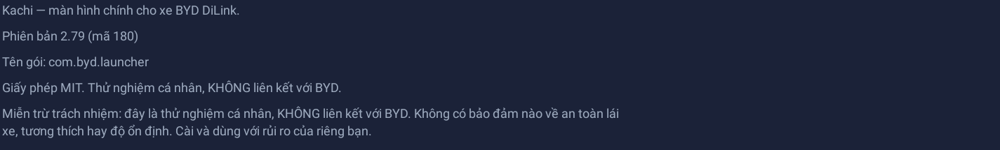
Phần 2Part 2
Đặt Kachi làm màn hình chínhSet Kachi as the home screen
Để nút Home của xe về Kachi.
So that the car’s Home button brings you to Kachi.
Ở đâu: Cài đặt › Hệ thống & quyền › Màn hình chính
Bấm “Đặt Kachi làm màn hình chính”
ROM BYD không hiện hộp chọn launcher, nên Kachi tự đặt qua kênh gỡ lỗi. Dòng trạng thái đổi thành “Kachi đang là màn hình chính.” Bấm Home trên xe là về Kachi.
(Tuỳ chọn) “Giữ Kachi làm màn hình chính khi nổ máy”
Nổ máy thì đặt lại Kachi làm màn hình chính một lần nếu hệ thống đã đổi. Mặc định tắt.
Muốn quay lại launcher gốc
Bấm Bỏ chọn Kachi làm màn hình chính rồi bấm Home.
Cùng trang còn khối Khởi động: Tự mở khi nổ máy (nổ máy là Kachi tự dựng lại các ô) và Chạy dịch vụ dẫn đường/cụm ở nền khi nổ máy (chỉ chạy dịch vụ, không mở màn hình). Hai công tắc này là hai việc khác nhau.
Where: Settings › System & permissions › Home screen
Tap “Set Kachi as home screen”
The BYD ROM shows no launcher chooser, so Kachi sets itself through the debugging channel. The status line changes to “Kachi is the home screen.” The car’s Home button now returns to Kachi.
(Optional) “Keep Kachi as home screen on engine start”
On engine start, Kachi reasserts itself as the home screen once if the system changed it. Off by default.
Going back to the stock launcher
Tap Stop using Kachi as home screen, then press Home.
The same page has a Start-up block: Open on engine start (Kachi rebuilds its slots when the car starts) and Run the navigation/cluster service in the background on engine start (runs only the service, no screen). They are two different things.

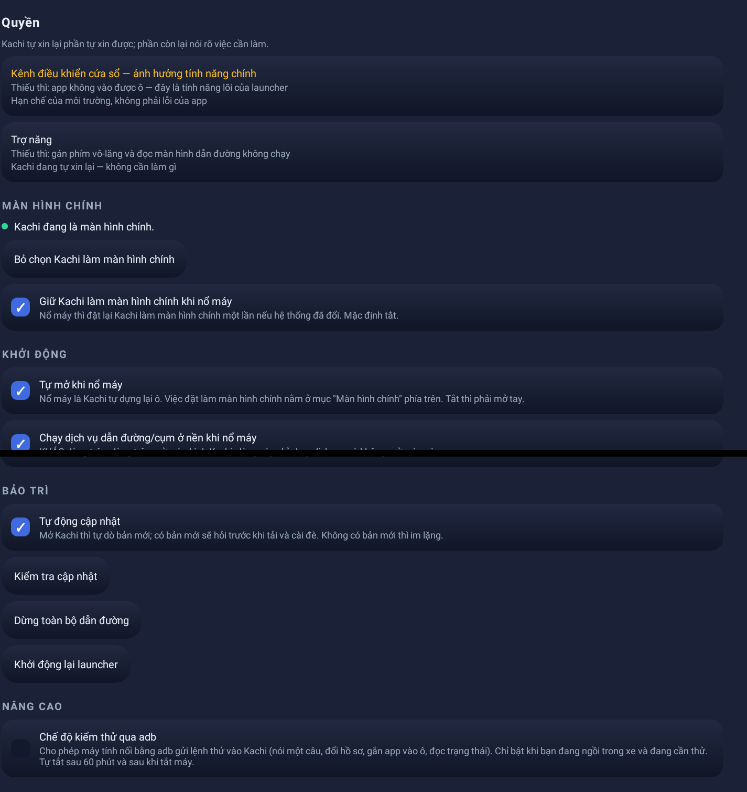
Phần 3Part 3
Màn hình chính: ba dảiThe home screen: three bands
Thanh trạng thái ở trên, vùng ô ở giữa, thanh nút xe ở dưới.
A status bar on top, the slot area in the middle, the car button bar at the bottom.

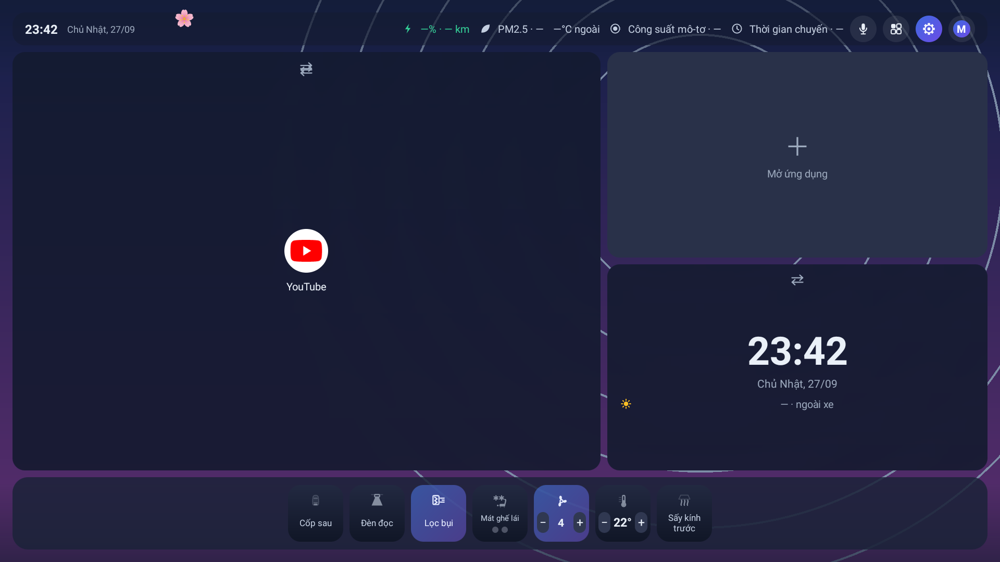
Thanh trạng thái (trên cùng)
- Bên trái: giờ và ngày.
- Giữa–phải: các chip thông tin xe (mặc định 5: Bụi mịn · Nhiệt độ ngoài · Năng lượng · Ghế lái · Ghế phụ). Chọn chip ở mục 8.
- Cuối: nút Ứng dụng (lưới ô vuông — mở ngăn kéo app toàn màn), Cài đặt (bánh răng), và chip hồ sơ (chữ cái đầu tên hồ sơ — chạm để đổi hồ sơ). Có thể bật thêm nút mic.
Dấu “—” nghĩa là chưa đọc được số đó từ xe, không phải bằng 0. Ảnh trong bài chụp trên máy ảo (không có xe) nên mọi số xe đều là “—”.
Status bar (top)
- Left: time and date.
- Middle–right: car chips (5 by default: PM2.5 · Outside temperature · Energy · Driver seat · Passenger seat). Choose chips in section 8.
- End: the Apps button (grid icon — opens the full-screen app drawer), Settings (gear) and the profile chip (first letter of the profile name — tap to switch profile). A mic button can be added too.
A “—” means the value could not be read from the car — not zero. The screenshots were taken on an emulator (no car), so every car value shows “—”.

Vùng ô (giữa)
Mỗi ô chứa một app chạy thật (app chạy trên một màn ảo đặt đúng chỗ ô), một hoặc nhiều widget, hoặc để trống trong suốt (thấy hình nền). Mép trên mỗi ô có nút:
| Nút | Có ở | Làm gì |
|---|---|---|
| chạy nền (hai hình vuông chồng) | ô app | Đưa app ra sau màn chính, app vẫn chạy (nhạc vẫn phát); ô thành trong suốt. App được cất vào một “ô 7” ẩn nên mở lại vào ô thì hiện ngay, giữ nguyên chỗ đang xem. |
| ⇄ | mọi ô | Mở bảng chọn nội dung ô (mục 5) để đổi app/widget. |
| ✕ | ô app, ô widget | Tắt ô. Phải chạm hai lần: lần đầu nút chuyển đỏ “Chạm lần nữa để tắt” — tránh bấm nhầm lúc lái. |
Chạy nền, tắt hay mở tạm một app khác vào ô đều chỉ là tạm thời: lần nổ máy sau (hoặc khi đổi hồ sơ) Kachi dựng lại đúng bố cục đã lưu của hồ sơ. Nếu ô vốn là widget, tắt app tạm thì widget hiện lại.
Bật Tự ẩn nút ⇄ (mục 4) thì các nút này ẩn cho thoáng; chạm vào ô (hoặc chỗ trống giữa các ô) là hiện lại vài giây.
Slot area (middle)
Each slot holds a real running app (the app runs on a virtual display placed exactly over the slot), one or more widgets, or stays transparent (you see the wallpaper). Each slot has buttons on its top edge:
| Button | On | What it does |
|---|---|---|
| run in background (two stacked squares) | app slots | Moves the app behind the home screen and keeps it running (music keeps playing); the slot becomes transparent. The app is parked in a hidden “slot 7”, so reopening it into a slot is instant and keeps your place. |
| ⇄ | every slot | Opens the slot content picker (section 5) to change the app/widget. |
| ✕ | app and widget slots | Closes the slot. It needs two taps: the first turns it red, “Tap again to close” — so you don’t close something by accident while driving. |
Running in the background, closing, or opening another app into a slot are all temporary: on the next engine start (or profile switch) Kachi rebuilds the profile’s saved layout. If the slot normally holds a widget, closing the temporary app brings the widget back.
With Auto-hide the ⇄ button on (section 4) these buttons hide; tap a slot (or the gap between slots) to show them for a few seconds.

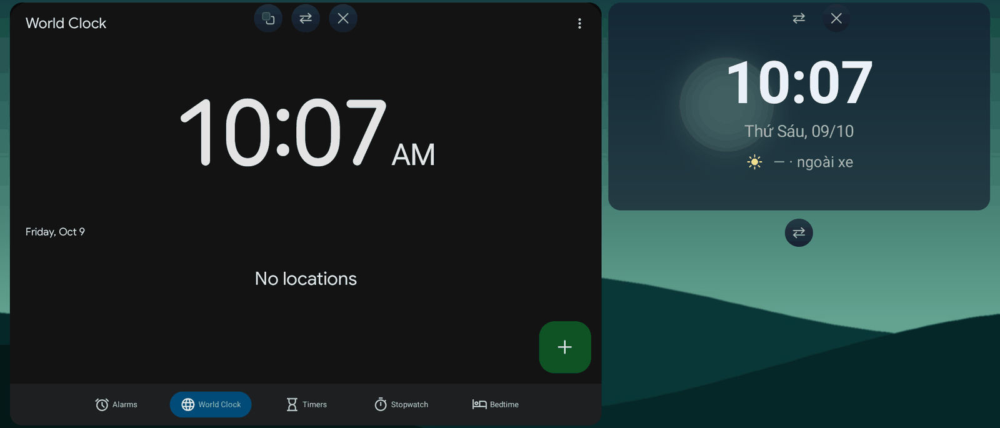

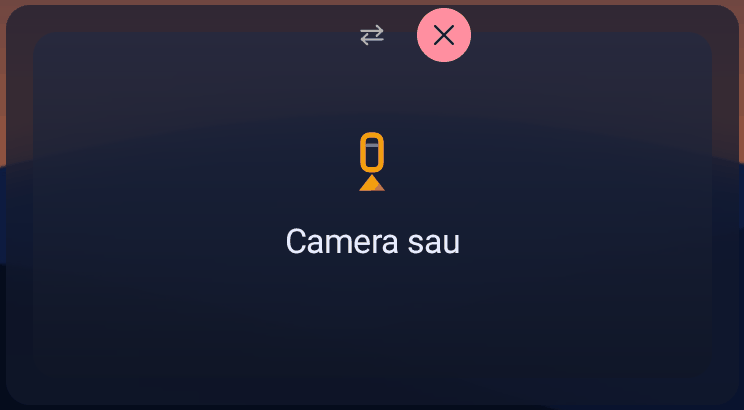
Thanh nút xe (dưới cùng)
Nút bấm nhanh: nút điều khiển xe (cốp, đèn, gió…), nút launcher (Ứng dụng, Cài đặt, Nói với xe), lối tắt app và camera theo yêu cầu. Nút bật/tắt đang bật thì sáng lên. Chọn nút, đổi cạnh đặt thanh và cỡ thanh ở mục 8.
Ngăn kéo “Mở ứng dụng”
Nút Ứng dụng trên thanh trạng thái mở ngăn kéo: hàng Gần đây và lưới Tất cả ứng dụng. App mở từ đây chạy toàn màn hình (không vào ô). Muốn đưa app vào ô thì dùng ⇄ của ô. Nhấn giữ một app trong ngăn kéo để dạy Kachi tên gọi bằng giọng (mục 14).
Car button bar (bottom)
Quick buttons: car controls (trunk, lights, fan…), launcher buttons (Apps, Settings, Talk to car), app shortcuts and on-demand cameras. An on/off button that is on lights up. Pick buttons, the bar edge and the bar size in section 8.
The “Open an app” drawer
The Apps button in the status bar opens the drawer: a Recent row and an All applications grid. Apps opened here run full screen (not in a slot). To put an app in a slot, use the slot’s ⇄. Long-press an app in the drawer to teach Kachi a spoken name for it (section 14).


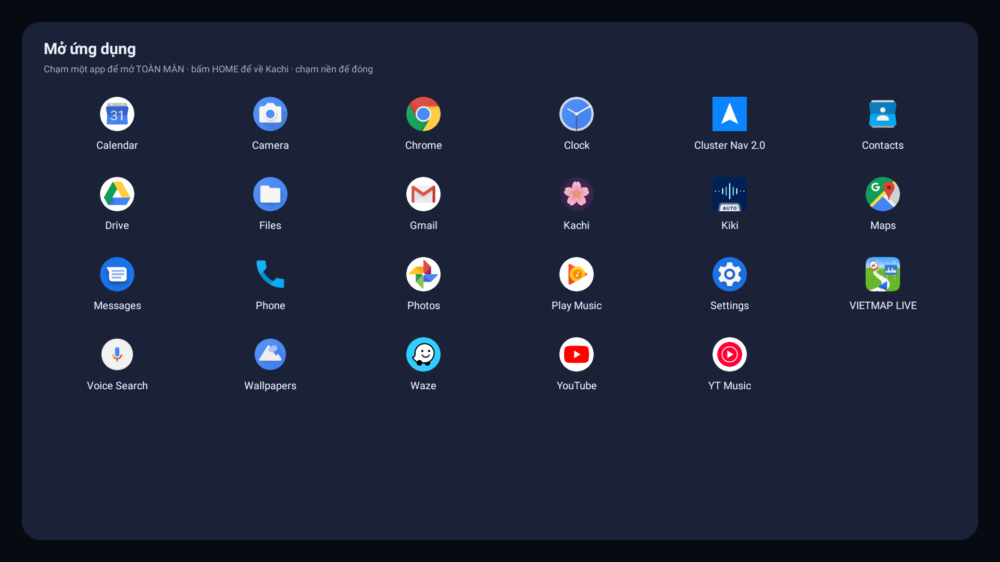
Hình nền và ảnh trình chiếu
Ở đâu: Cài đặt › Màn hình chính › Hình nền. Bật Dùng ảnh làm hình nền, chép ảnh vào thư mục Android/data/com.byd.launcher/files/wallpapers/ (cắm USB hoặc dùng app Quản lý tệp; nút sao chép đường dẫn có sẵn). Chỉnh chu kỳ đổi ảnh, cách phủ và độ làm tối. Từ 2.96, chép ảnh vào là tự lên, không cần ra vào màn chính.
Widget Trình chiếu ảnh dùng thư mục khác: …/files/photos/. Bỏ nhầm thư mục là chỗ hay lẫn nhất.
Wallpaper and slideshow photos
Where: Settings › Home screen › Wallpaper. Turn on Use photos as the wallpaper and copy photos into Android/data/com.byd.launcher/files/wallpapers/ (USB stick or the Files app; a copy-path button is provided). Set the cycle time, fit and darkening. Since 2.96 new photos show up by themselves, no need to leave and re-enter the home screen.
The Photo slideshow widget uses a different folder: …/files/photos/. Mixing up the two folders is the most common mistake.

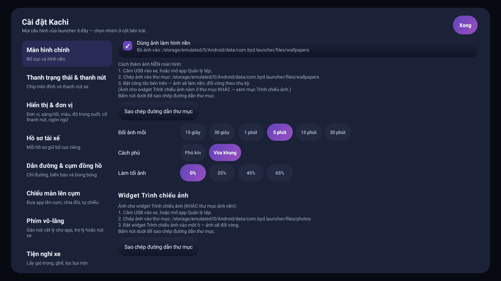
Phần 4Part 4
Bố cục và trình vẽ bố cụcLayouts and the layout editor
Chia màn thành mấy ô, theo mẫu sẵn hoặc tự vẽ.
Split the screen into slots, from a preset or your own drawing.
Ở đâu: Cài đặt › Màn hình chính › Bố cục màn hình. Sáu chip: 1 ô · 2 cột · 2 hàng · 3 ô · 4 ô · Tự vẽ. Đổi bố cục thì nội dung ô nào giữ ở ô đó. Bố cục lưu theo hồ sơ. Nói được: “bố cục hai ô”, “đổi bố cục 4 ô”.
Ngay dưới là Tự ẩn nút ⇄: ẩn nút đổi app/widget của khung cho thoáng; chạm vào khung (hoặc chỗ trống trên màn) là hiện lại vài giây.
Where: Settings › Home screen › Screen layout. Six chips: 1 slot · 2 columns · 2 rows · 3 slots · 4 slots · Custom. Changing the layout keeps each slot’s content in that slot. Layouts are saved per profile. Voice works too (Vietnamese): “bố cục hai ô” (two-slot layout), “đổi bố cục 4 ô”.
Right below is Auto-hide the ⇄ button: hides each frame’s app/widget switch button; tap a frame (or an empty spot) to show it for a few seconds.

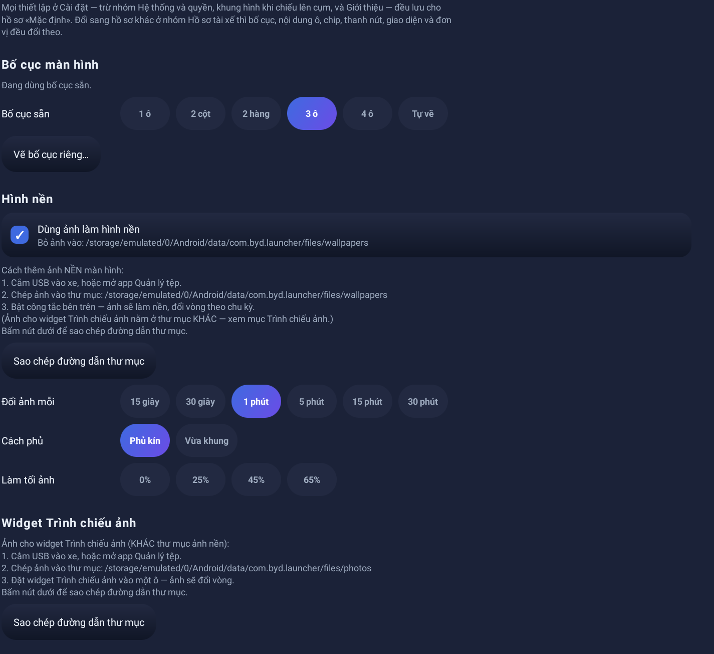

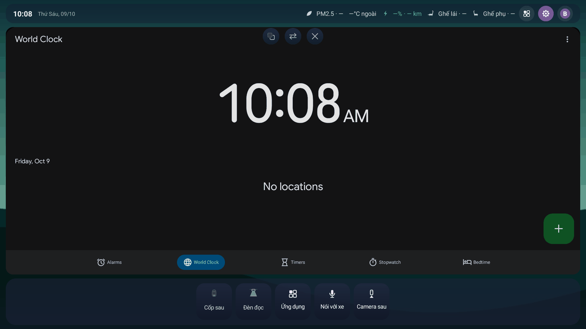

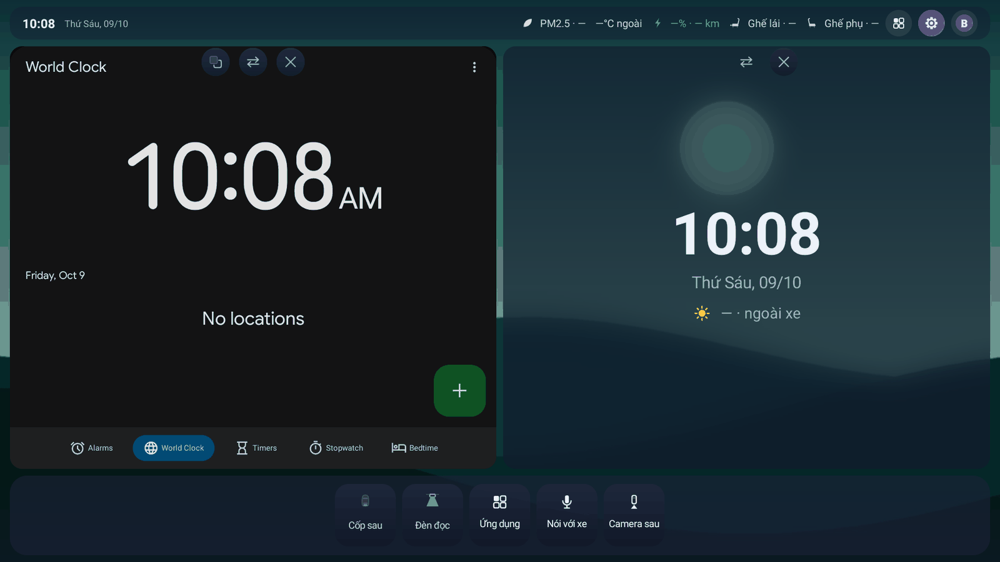

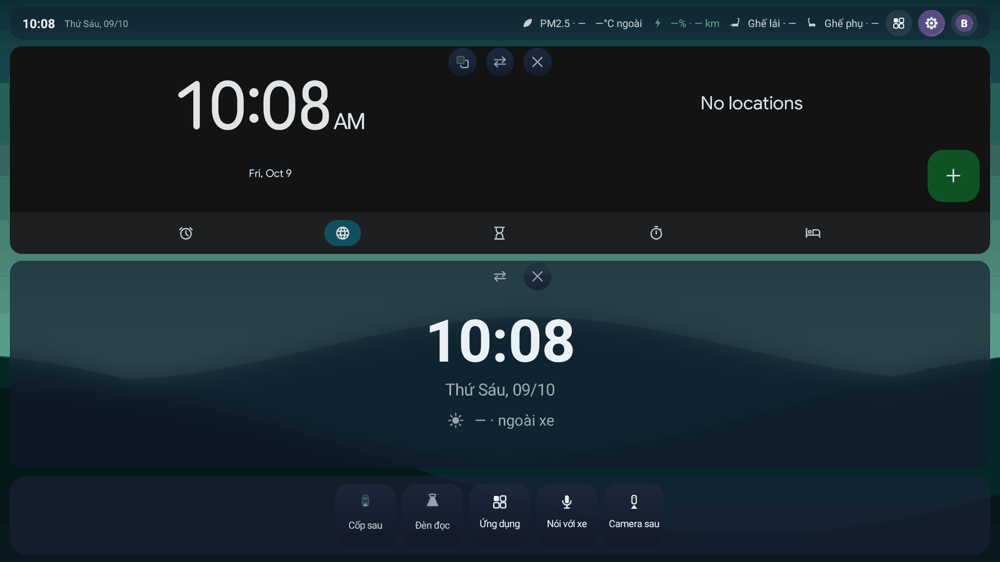

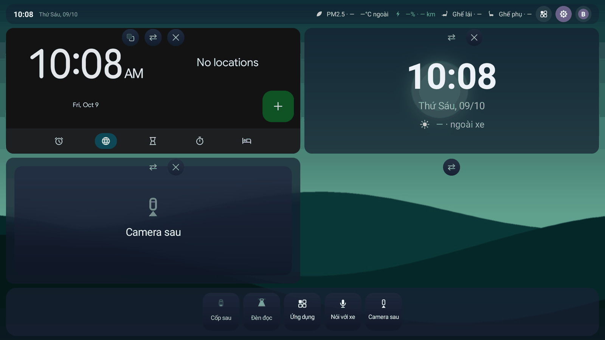
Tự vẽ bố cục
Mở trình vẽ
Bấm Vẽ bố cục riêng…. Màn hiện lưới 12 cột × 6 dòng với các khung đang có.
Dời và đổi cỡ
Kéo giữa khung để dời, kéo góc dưới-phải để đổi cỡ. Khung luôn bám ô lưới. Nút Thêm/Xoá thêm bớt khung; Về bố cục sẵn bỏ bản vẽ.
Lưu
Bấm Lưu. Nếu hai khung đè nhau, dòng đỏ báo “Chưa lưu được: khung 1 và khung 3 đè lên nhau” và nút Lưu mờ đi cho tới khi bạn gỡ chỗ đè.
Khung đã vẽ mà chưa có nội dung thì trong suốt (thấy hình nền); chạm ⇄ để chọn app/widget. Nói “mở … vào ô số 6” dùng được với bố cục tự vẽ nhiều ô.
Drawing your own layout
Open the editor
Tap Draw your own layout…. You get a 12 × 6 grid with the current frames.
Move and resize
Drag the middle of a frame to move it, the bottom-right corner to resize. Frames always snap to the grid. Add/Delete add or remove frames; Back to a preset layout discards the drawing.
Save
Tap Save. If two frames overlap, a red line says frame 1 and frame 3 overlap and Save stays disabled until you fix it.
A drawn frame with no content is transparent (wallpaper shows); tap ⇄ to choose an app/widget. Saying “mở … vào ô số 6” (open … into slot 6) works with many-slot custom layouts.

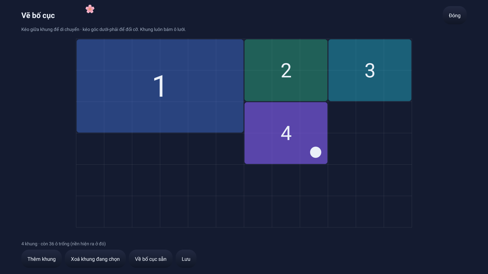

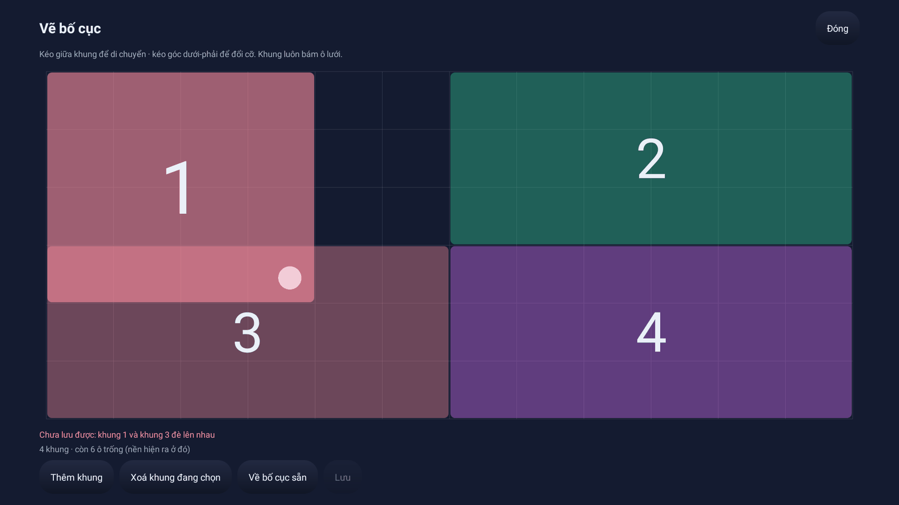
Phần 5Part 5
Đặt app hoặc widget vào ôPutting an app or widget into a slot
Chạm ⇄ (hoặc ô trống) để mở bảng chọn nội dung ô.
Tap ⇄ (or an empty slot) to open the slot content picker.
Bảng “Đặt widget hoặc mở app vào ô này” có các khối, từ trên xuống:
| Khối | Là gì |
|---|---|
| Ứng dụng | Chạm một app là mở ngay vào ô (app chạy thật). |
| Widget của app khác | Widget Android do app khác vẽ (đồng hồ, lịch, nhạc…). Chạm để đặt vào ô. |
| Nhóm — xem cả cụm cùng lúc (8) | Một ô trả lời trọn một câu hỏi: Lốp · Kính · Cửa & khoang · Đèn · Khí hậu & không khí · Năng lượng · Sức khỏe pin · Chuyến đi. |
| Camera theo yêu cầu | Nút Camera sau · trái · phải · trước · Tắt camera (mục 10). |
| Thẻ dựng tay (10 thẻ) | Thẻ vẽ riêng, mỗi thẻ một dáng sẵn (mục 6). |
| Từng mục riêng | Một con số hoặc một nút lẻ, xếp theo lĩnh vực. |
Widget: chọn nhiều rồi bấm Đặt. App: chạm là mở ngay. Chạm nền tối để đóng. Nút Bỏ widget làm trống ô.
The “Put a widget or an app in this slot” picker has these blocks, top to bottom:
| Block | What it is |
|---|---|
| Applications | Tap an app to open it in the slot right away (it really runs). |
| Widgets from other apps | Android widgets drawn by other apps (clock, calendar, music…). Tap one to place it. |
| Groups — see a whole set at once (8) | One slot answers a whole question: Tyres · Windows · Doors & openings · Lights · Climate & air · Energy · Battery health · Trip. |
| Camera on demand | Rear · Left · Right · Front camera · Camera off buttons (section 10). |
| Hand-built cards (10) | Purpose-drawn cards, each with its own look (section 6). |
| Individual items | A single value or a single button, sorted by domain. |
Widgets: pick several, then tap Place. Apps: a tap opens them at once. Tap the dark background to close. The Clear widgets button empties the slot.

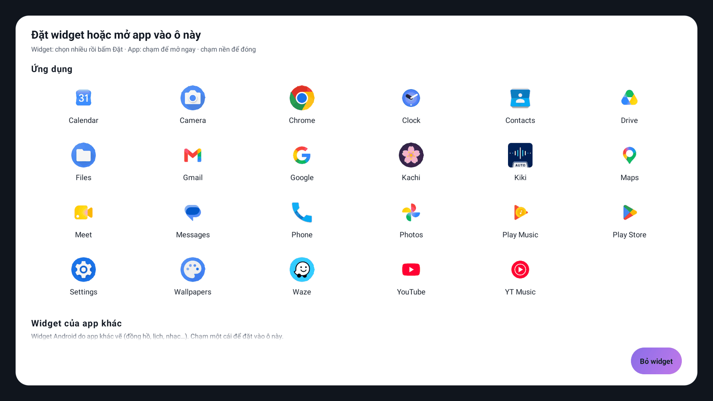

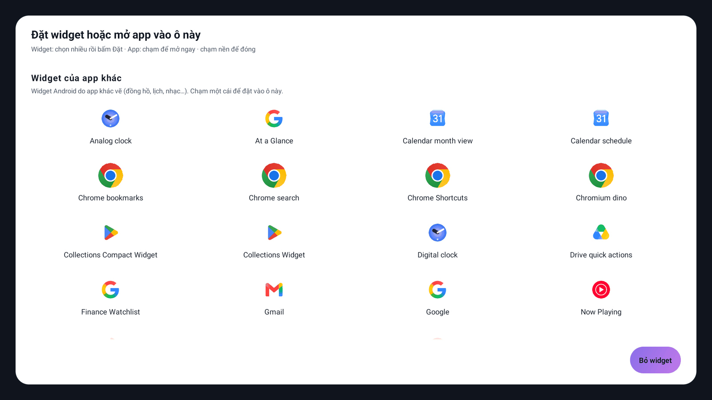

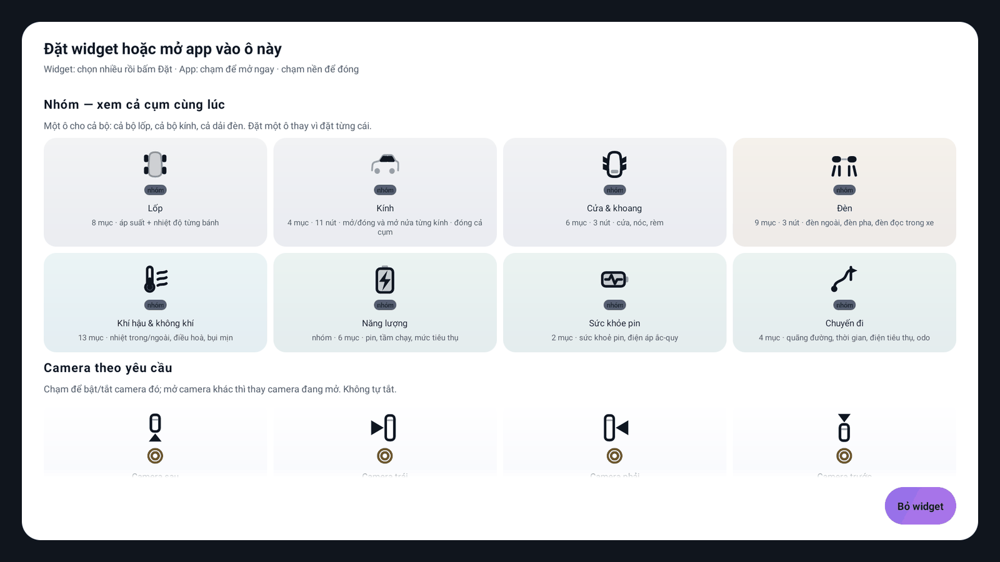

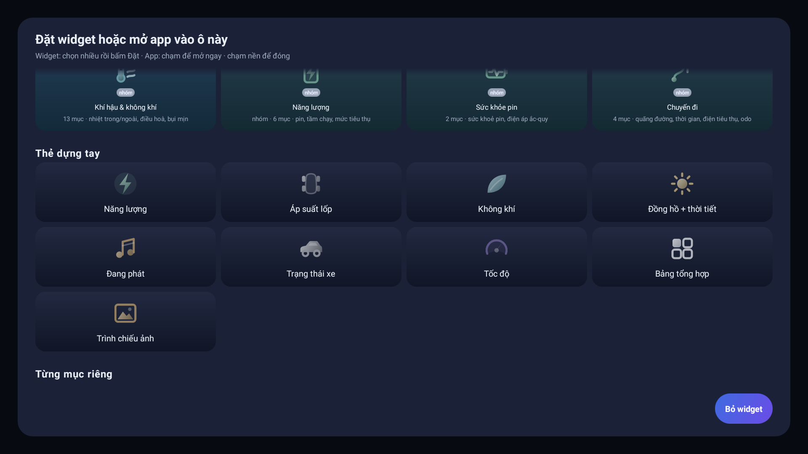
Ô nhóm: xem ở giữa, bấm ở đáy
Ô nhóm có ba tầng: đầu ô (hình + tên nhóm) · các ô con chỉ để xem · hàng nút ở đáy. Chạm vào con số ở giữa không gửi lệnh cho xe, nó chỉ mở lại bảng chọn. Lệnh chỉ đi từ hàng nút đáy, và chỉ ba nhóm có hàng nút: Kính · Cửa & khoang · Đèn. Màu ô con: xám = bình thường/tắt/chưa đọc được · xanh nhấn = đang bật/mở · hổ phách = nên để ý · đỏ = cảnh báo.
Từng mục riêng: con mắt và bàn tay
Mỗi mục lẻ có huy hiệu: con mắt (viên xanh) = chỉ để xem; bàn tay (viên hổ phách) = nút bấm thật, ra lệnh cho xe. Mục đã có trong một nhóm thì ghi “Đã có trong nhóm: …” — vẫn đặt riêng được. Đầu lĩnh vực có thể ghi “N mục chưa kiểm trên xe”: mục đó có thể không ra số hoặc bấm không ăn trên xe của bạn.
Nhiều mục trong một ô
Một ô chứa tối đa 8 mục. Đủ 8 thì nút đáy ghi “Đặt 8 widget” và dòng “Ô chứa tối đa 8 mục — bỏ một mục để thêm”. 1 mục chiếm trọn ô ở dáng đầy đủ; từ 2 mục trở lên mỗi mục ở dáng nén (hình, một số, một dòng), xếp hàng/lưới (vd 6 mục = 3 + 3) và tự co giãn theo cỡ khung.
Group tiles: look in the middle, press at the bottom
A group tile has three tiers: header (icon + group name) · sub-tiles that are view-only · a button row at the bottom. Tapping a number in the middle sends nothing to the car — it just reopens the picker. Commands only come from the bottom row, and only three groups have one: Windows · Doors & openings · Lights. Sub-tile colours: grey = normal/off/not read · accent = on/open · amber = worth a look · red = warning.
Individual items: eye and hand
Each single item has a badge: eye (green pill) = view-only; hand (amber pill) = a real button that commands the car. An item already in a group says “Already in a group: …” — you can still place it alone. A domain header may read “N … not yet checked on this car”: such an item may show no value or do nothing on your car.
Several items in one slot
A slot holds up to 8 items. At 8, the button reads “Place 8 widgets” and a line says “A slot holds at most 8 items — remove one to add another”. One item fills the slot in its full form; from 2 items on each item uses a compact form (icon, one value, one line), laid out in rows/grids (e.g. 6 items = 3 + 3) that scale with the frame.

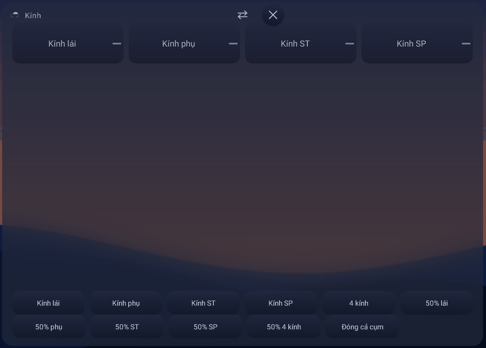

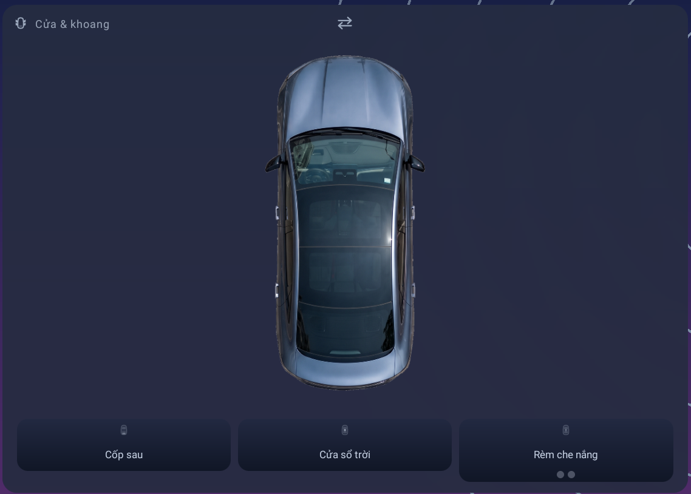

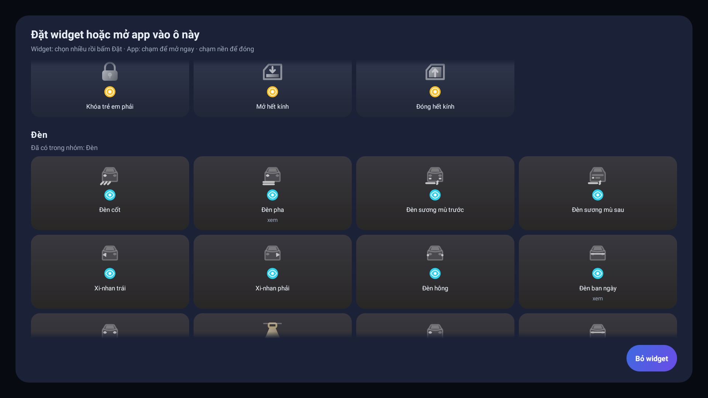

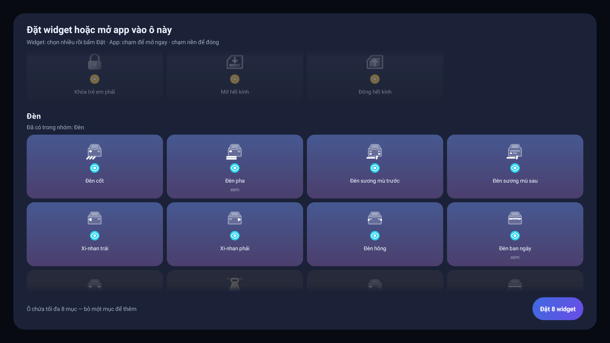

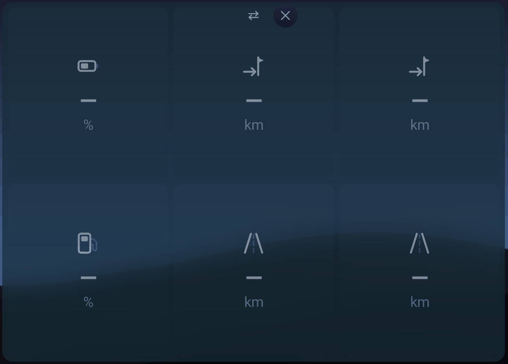
Phần 6Part 6
Thẻ dựng tay (widget có sẵn)Hand-built cards (built-in widgets)
Mười thẻ Kachi tự vẽ. Ảnh chụp trên máy ảo nên số xe là “—”.
Ten cards drawn by Kachi. Shot on the emulator, so car values show “—”.
| Thẻ | Hiện gì | Bấm được? | Cần số liệu xe? |
|---|---|---|---|
| Năng lượng | Vòng pin, % ở giữa, dòng “≈ N km” tầm chạy còn lại | Không | Có |
| Áp suất lốp | Hình xe + 4 thẻ TT/TP/ST/SP (trước-trái…) | Không | Có |
| Không khí | Vòng bụi mịn, số µg/m³, mức PM2.5 | Không | Có |
| Đồng hồ + thời tiết | Giờ lớn, thứ + ngày, nhiệt độ ngoài xe | Không | Chỉ dòng nhiệt độ |
| Đang phát | Ảnh bìa, tên bài, ca sĩ, 3 nút lùi · phát/tạm dừng · sang bài | Có (3 nút) | Không |
| Trạng thái xe | Hình xe, cửa mở tô lên hình, một dòng kết luận | Không | Có |
| Tốc độ | Số lớn km/h, “Tốc độ hiện tại” (không cảnh báo quá tốc) | Không | Có |
| Bảng tổng hợp | 4 ô con: pin · PM2.5 · lốp · nhạc | Không | Có (trừ nhạc) |
| Trình chiếu ảnh | Ảnh trong thư mục files/photos/, tự đổi vòng | Không | Không |
| Lưới lối tắt app | Icon các app đã chọn trong Lối tắt ứng dụng (mục 8); ít app icon to, nhiều app thì nhỏ lại và cuộn được | Có | Không |
Màu lốp theo chính xe báo (từ 2.88): xanh bình thường · vàng chú ý · đỏ cảnh báo · xám chưa đọc được. Chữ nổ lốp / bất thường chỉ hiện khi cụm đồng hồ của xe cũng báo, để không báo giả. Nút giữa của thẻ Đang phát luôn mang hình ▶ nhưng đang phát mà bấm là tạm dừng.
| Card | Shows | Tappable? | Needs car data? |
|---|---|---|---|
| Energy | Battery ring, % in the middle, “≈ N km” remaining range | No | Yes |
| Tyre pressure | Car image + 4 tiles FL/FR/RL/RR | No | Yes |
| Air quality | PM2.5 ring, µg/m³ value, PM2.5 level | No | Yes |
| Clock + weather | Large time, weekday + date, outside temperature | No | Temperature line only |
| Now playing | Cover art, title, artist, 3 buttons previous · play/pause · next | Yes (3 buttons) | No |
| Car status | Car image, open doors highlighted, one summary line | No | Yes |
| Speed | Large km/h value, “Current speed” (no over-speed warning) | No | Yes |
| Overview board | 4 sub-tiles: battery · PM2.5 · tyres · music | No | Yes (except music) |
| Photo slideshow | Photos from files/photos/, cycling | No | No |
| App shortcut grid | Icons of the apps chosen in App shortcuts (section 8); few apps = big icons, many = smaller and scrollable | Yes | No |
Tyre colours follow what the car itself reports (since 2.88): green normal · yellow attention · red warning · grey not read. The words blowout / abnormal appear only when the car’s own cluster also warns, to avoid false alarms. The Now playing middle button always shows ▶, but pressing it while playing pauses.

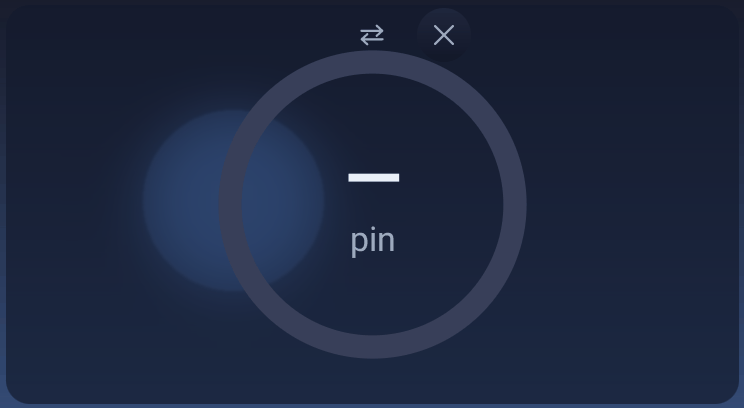

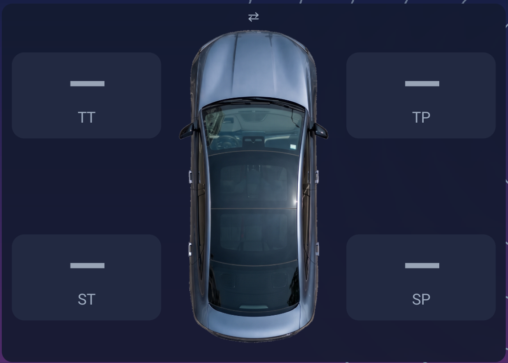

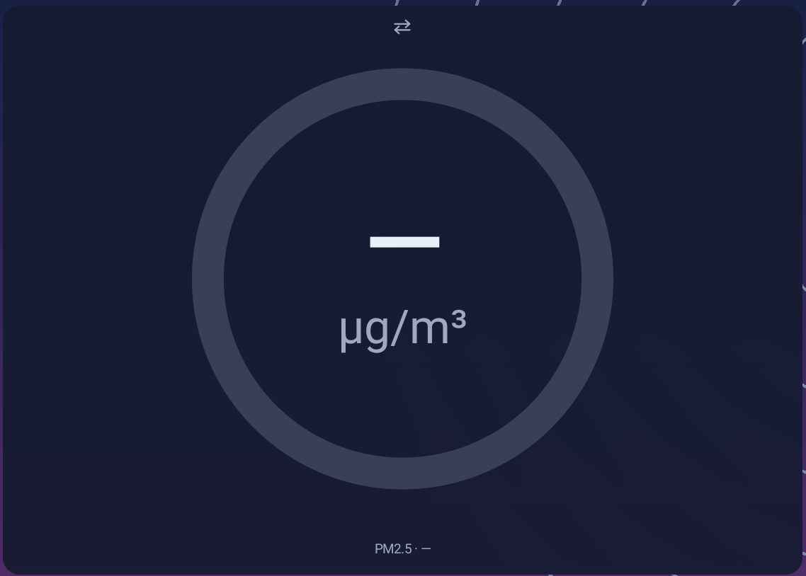

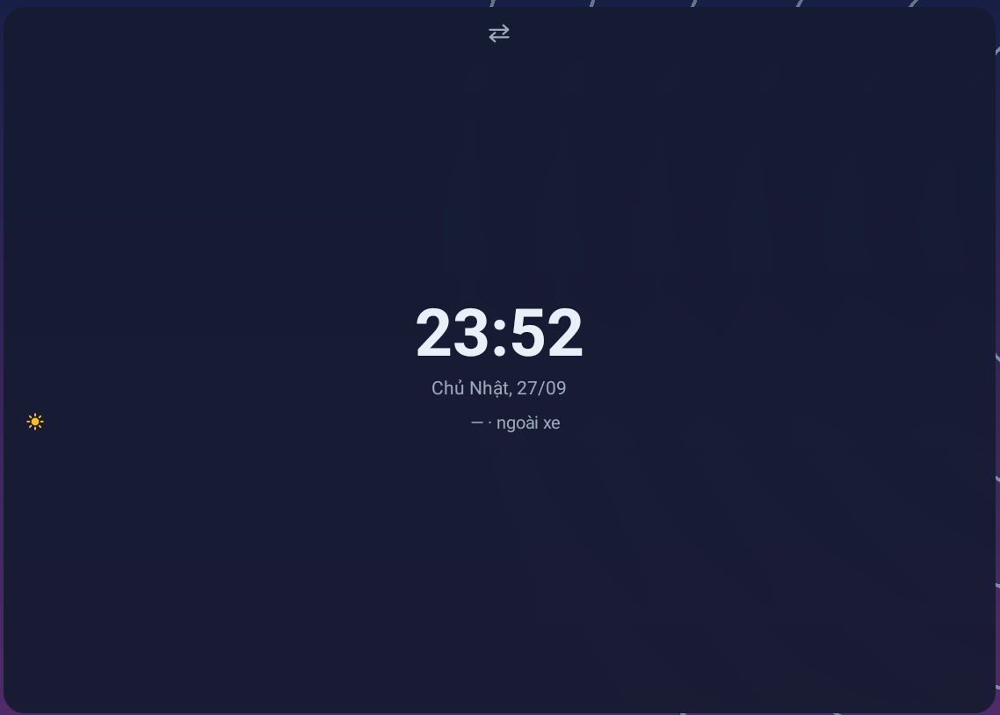

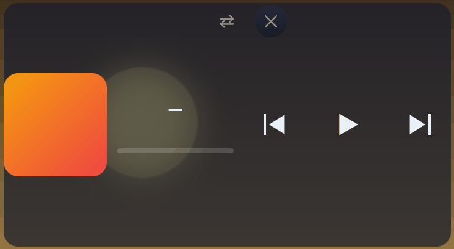

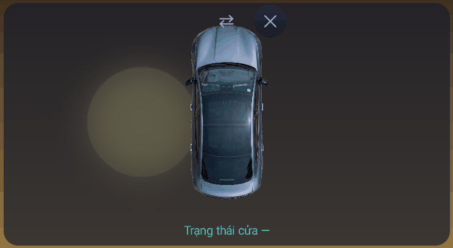

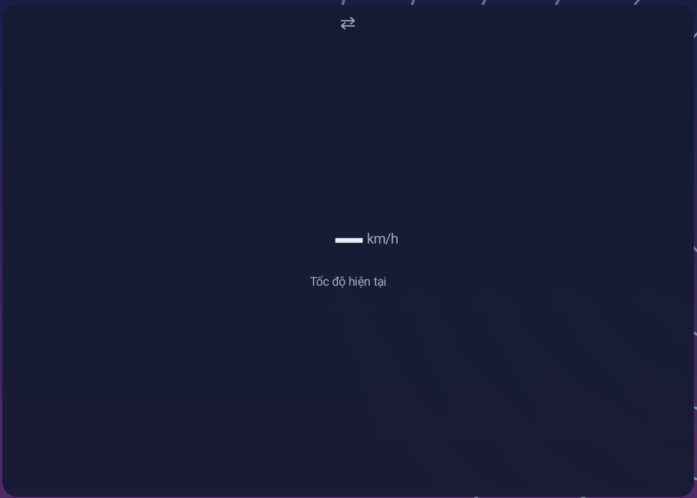

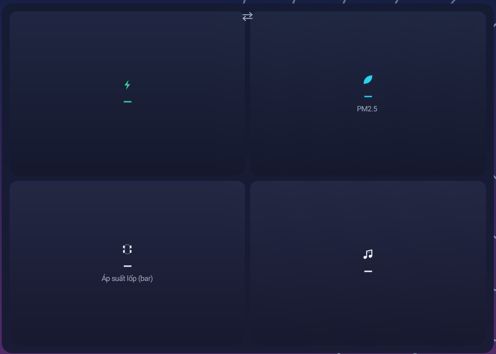

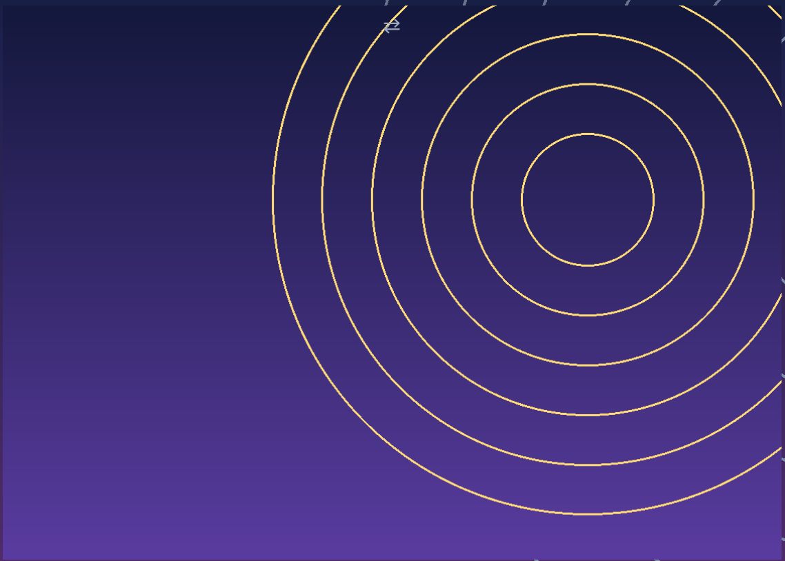

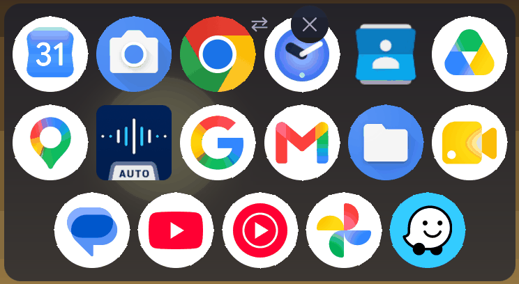
Số liệu thật (pin, lốp, bụi mịn, tốc độ, cửa) chỉ có trên xe. Đọc được hay không tuỳ đời xe/ROM.
Real values (battery, tyres, PM2.5, speed, doors) only exist in the car. Whether each one can be read depends on the model/ROM.
Phần 7Part 7
Hồ sơ tài xếDriver profiles
Mỗi hồ sơ giữ riêng gần như mọi thứ — bố cục, ô, thanh nút, giao diện, chiếu cụm, camera.
Each profile keeps its own copy of nearly everything — layout, slots, button bar, theme, casting, cameras.
Đổi nhanh: chạm chip hồ sơ ở cuối thanh trạng thái → hộp “Đổi hồ sơ tài xế” → chọn hồ sơ (hoặc Quản lý hồ sơ…). Hoặc nói “chuyển sang hồ sơ X”.
Quản lý: Cài đặt › Hồ sơ tài xế — chạm một hồ sơ để đổi sang; Đổi tên / Xoá cạnh từng hồ sơ; Thêm hồ sơ (bản sao của …) tạo bản sao của hồ sơ đang dùng; Hồ sơ lúc nổ máy: gần nhất hoặc một hồ sơ cố định.
Cái gì theo hồ sơ
Mọi thiết lập trong Cài đặt, trừ: nhóm Hệ thống & quyền (riêng Tự mở Kachi khi nổ máy, Chạy dịch vụ nền khi nổ máy, Mở app khi nổ máy và Tự mở nhạc khi lên xe vẫn theo hồ sơ), hầu hết nhóm Giọng nói, App dẫn đường mặc định, Kính thật, Tự sấy kính khi mưa, phần chỉnh camera theo xe (xoay, lật gương, góc nhìn) và Giới thiệu. Theo hồ sơ có cả: sổ địa chỉ, lịch dẫn đường, tên app đã dạy, chiếu lên cụm, khung và DPI từng app, nút nổi, camera.
Khi đổi hồ sơ (2.97)
- Bố cục, nội dung ô, chip, thanh nút, giao diện, đơn vị đổi ngay.
- Kachi không tắt app nào: app mà hồ sơ mới cũng có thì chạy tiếp ngay trong ô mới (nhạc không ngắt); app không có trong hồ sơ mới chỉ rời màn hình — nhạc nền, dẫn đường lên cụm/HUD của nó vẫn chạy.
- Nếu hồ sơ mới đang tắt “Dẫn đường lên cụm đồng hồ”, Kachi hiện dòng nhắc: “Hồ sơ «X» đang TẮT dẫn đường lên cụm đồng hồ/HUD. Bật lại ở Cài đặt › Dẫn đường + HUD.”
- Khung và DPI khi chiếu đổi từ lần chiếu sau; bật/tắt chiếu đổi từ lần nổ máy sau (hoặc Áp ngay ở mục 12).
Quick switch: tap the profile chip at the end of the status bar → the “Switch driver profile” box → pick a profile (or Manage profiles…). Or say “chuyển sang hồ sơ X” (switch to profile X).
Manage: Settings › Driver profiles — tap a profile to switch to it; Rename / Delete next to each one; Add profile (a copy of …) copies the active profile; Profile on engine start: last used or a fixed one.
What a profile owns
Every setting in Settings except: System & permissions (though Auto-start Kachi on engine start, Run background service on engine start, Open apps at ignition and Play music when you get in do follow the profile), most of Voice, Default navigation app, Real glass, Auto-defrost when it rains, the per-car camera tuning (rotation, mirroring, view) and About. A profile also owns: the address book, navigation schedule, taught app names, cluster casting, each app’s frame and DPI, the floating button and the cameras.
When you switch (2.97)
- Layout, slot contents, chips, button bar, theme and units change at once.
- Kachi closes no app: an app the new profile also has keeps running in its new slot (music doesn’t stop); an app the new profile lacks just leaves the screen — its background music or cluster/HUD navigation keeps running.
- If the new profile has “Navigation on the cluster” off, Kachi shows a reminder: “Profile «X» has navigation on the cluster/HUD turned OFF. Turn it on in Settings › Navigation + HUD.”
- Casting frame and DPI change from the next cast; casting on/off from the next engine start (or Apply now, section 12).

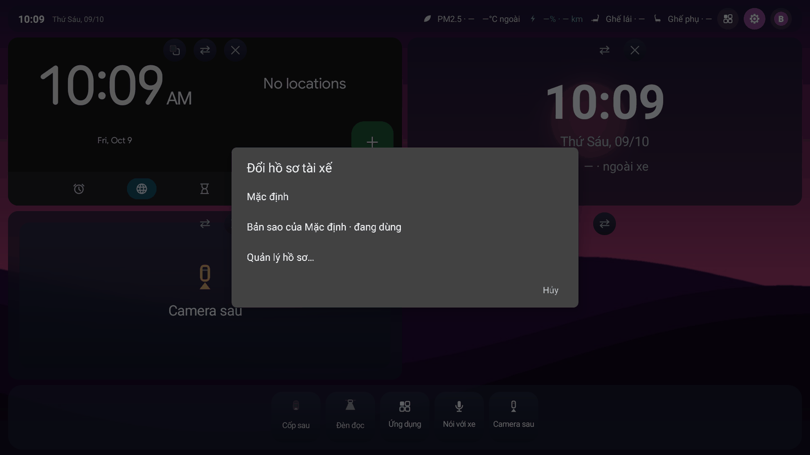

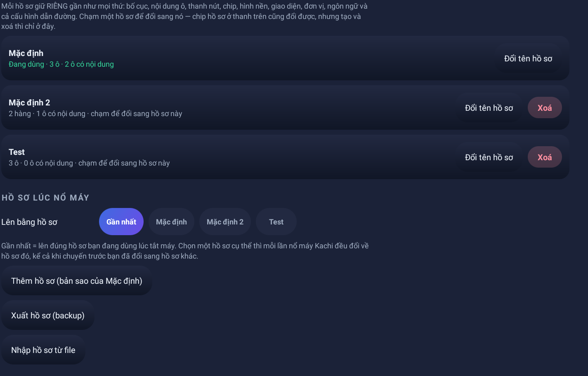
Sao lưu, chia sẻ, nhập
- Xuất đầy đủ (sao lưu) — có cả sổ địa chỉ và lịch dẫn đường.
- Xuất để chia sẻ — không kèm địa chỉ và lịch dẫn đường. Gửi người khác thì dùng bản này.
- Mỗi lần xuất ghi một tệp mới vào
Android/data/com.byd.launcher/files/profiles/, tên<hồ sơ>-<ngày-giờ>[-share].kachi; không ghi đè tệp cũ. - Nhập hồ sơ từ file: danh sách tệp trong thư mục đó (mới nhất trên cùng); chạm một tệp để nhập. Trùng tên thì thành “tên 2”, “tên 3”… Hộp nhập cho biết tệp có gì (chiếu cụm, khung) và có nút Dùng hồ sơ này ngay. Tệp không có khung chiếu cho app nào thì giữ khung đang có trên xe.
Backup, share, import
- Export full (backup) — includes the address book and navigation schedule.
- Export for sharing — without addresses and navigation schedule. Use this one when sending to someone else.
- Each export writes a new file into
Android/data/com.byd.launcher/files/profiles/, named<profile>-<date-time>[-share].kachi; old files are never overwritten. - Import profile from file: lists the files in that folder (newest first); tap one file to import it. Duplicate names become “name 2”, “name 3”… The import box tells you what the file contains (casting, frames) and offers Use this profile now. If the file has no cast frame for an app, this car’s frame is kept.

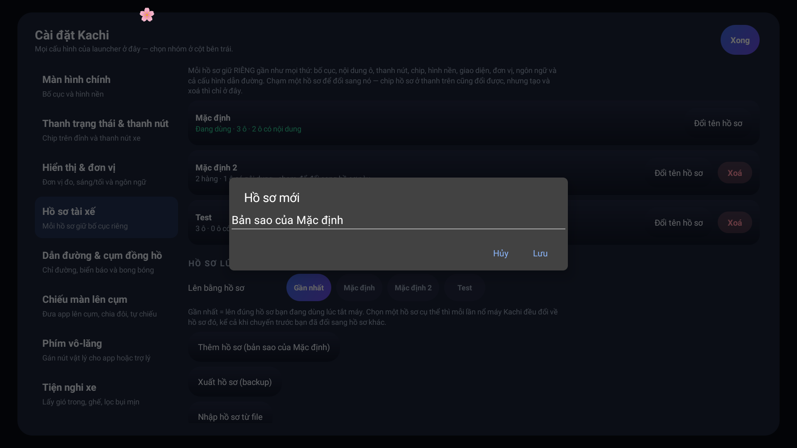

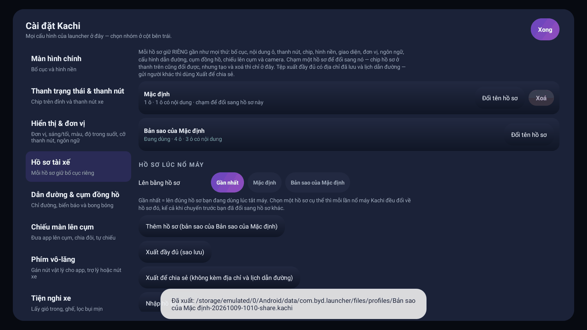

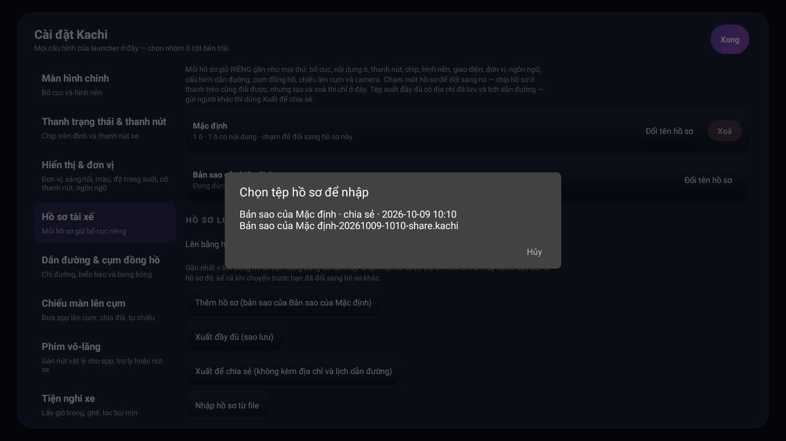
Phần 8Part 8
Thanh trên, thanh nút, hiển thịTop bar, button bar and display
Chọn chip, chọn nút, lối tắt app, sáng/tối, đơn vị, độ trong suốt, cỡ thanh, ngôn ngữ.
Chips, buttons, app shortcuts, light/dark, units, transparency, bar size, language.
Chip trên thanh trạng thái
Ở đâu: Cài đặt › Thanh trạng thái & thanh nút. Lưới Chip trên thanh trạng thái ghi số đang bật (vd “ĐANG BẬT 5/16”); chạm ô để bật/tắt, dùng ◀ ▶ hoặc Vị trí trên thanh trên để sắp thứ tự. Hiện nhãn trên thanh trên: tắt thì chỉ còn icon + số cho đỡ chật.
Chip Áp suất lốp (2.88): icon bánh xe + 4 số theo thứ tự trước-trái · trước-phải · sau-trái · sau-phải, màu theo xe báo (xanh · vàng · đỏ · xám). Chip Ghế lái / Ghế phụ hiện sưởi hoặc mát + mức 1/2 từng ghế.
Status-bar chips
Where: Settings › Status bar & button bar. The Status-bar chips grid shows how many are on (e.g. “ON 5/16”); tap a tile to switch it, use ◀ ▶ or Status-bar item order to reorder. Show chip labels: off leaves just icon + value, which saves space.
The Tyre pressure chip (2.88): a wheel icon + 4 values in the order front-left · front-right · rear-left · rear-right, coloured as the car reports (green · yellow · red · grey). The Driver / Passenger seat chips show heat or cool + level 1/2 per seat.

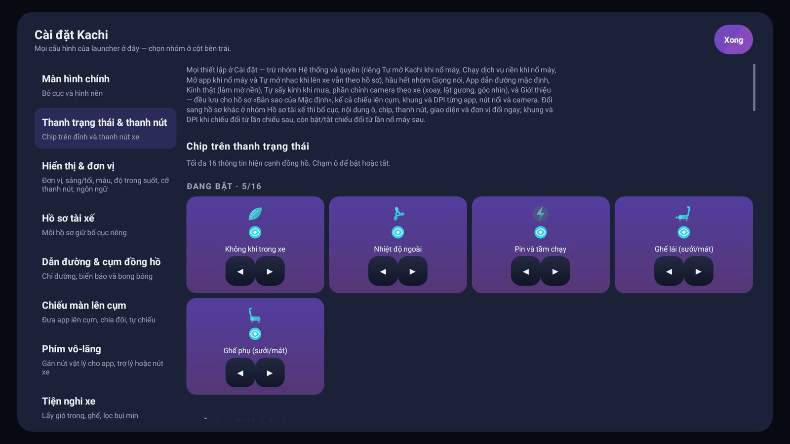

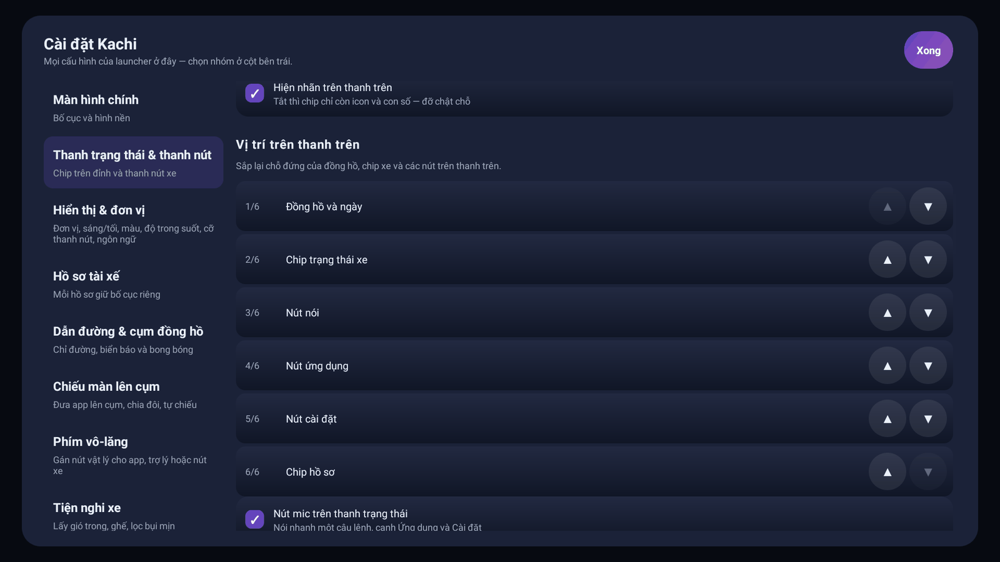
Nút mic và thanh nút xe
Nút mic trên thanh trạng thái: thêm nút nói nhanh cạnh Ứng dụng và Cài đặt. Khối Thanh nút xe: Hiện thanh nút xe · Viền đặt thanh (4 cạnh) · Chọn nút trên thanh… (danh mục: khối Launcher — Ứng dụng · Cài đặt · Nói với xe · Lối tắt ứng dụng; khối Camera theo yêu cầu; các nhóm nút xe) · Vị trí trên thanh nút xe.
Lối tắt ứng dụng
Mục Lối tắt ứng dụng (N): chọn app, mỗi app một kiểu mở — Ô 1, Ô 2… (đặt tạm vào ô đó, kể cả ô đang là widget; app cũ của ô lùi ra sau, không bị tắt) · Toàn màn · Chạy ngầm (mở phía sau màn chính, không che gì). Ô số lớn hơn số ô của bố cục thì mờ và mở toàn màn. Icon hiện trên khối Lối tắt ứng dụng của thanh nút (bật khối ở Chọn nút trên thanh…) và trong widget Lưới lối tắt app. Từ 2.92 không còn trần 8 app.
Mic button and the car button bar
Mic button on the status bar: adds a quick-talk button next to Apps and Settings. The Car button bar block: Show the car button bar · Bar edge (4 edges) · Choose bar buttons… (catalogue: Launcher block — Apps · Settings · Talk to car · App shortcuts; Camera on demand block; car control groups) · Car-bar item order.
App shortcuts
App shortcuts (N): pick apps, each with its own way to open — Slot 1, Slot 2… (placed temporarily in that slot, even a widget slot; the slot’s previous app moves behind, it is not closed) · Full screen · Background (opens behind the home screen, covers nothing). A slot number beyond the current layout is dimmed and opens full screen. The icons appear in the button bar’s App shortcuts block (enable it under Choose bar buttons…) and in the App shortcut grid widget. Since 2.92 there is no 8-app cap.

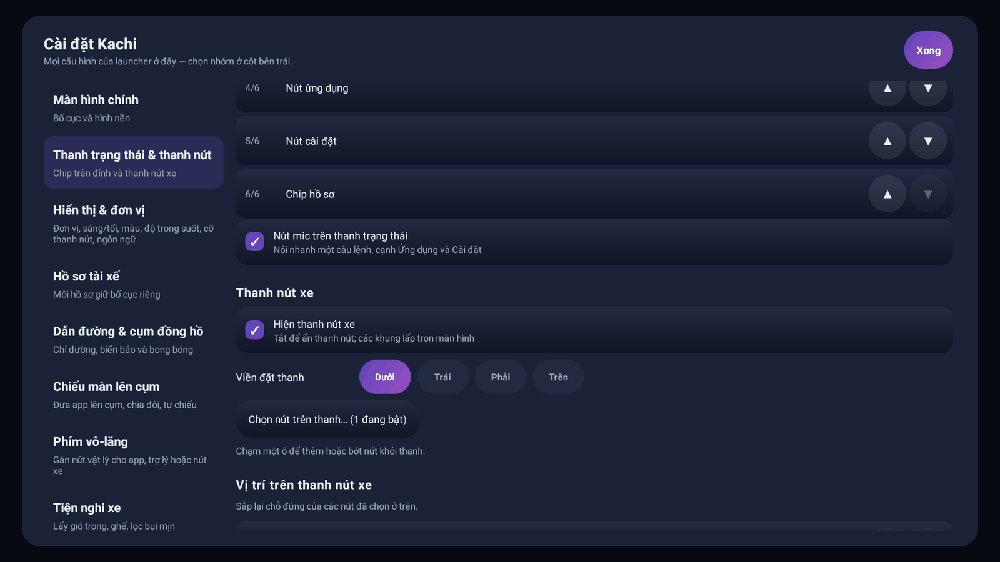


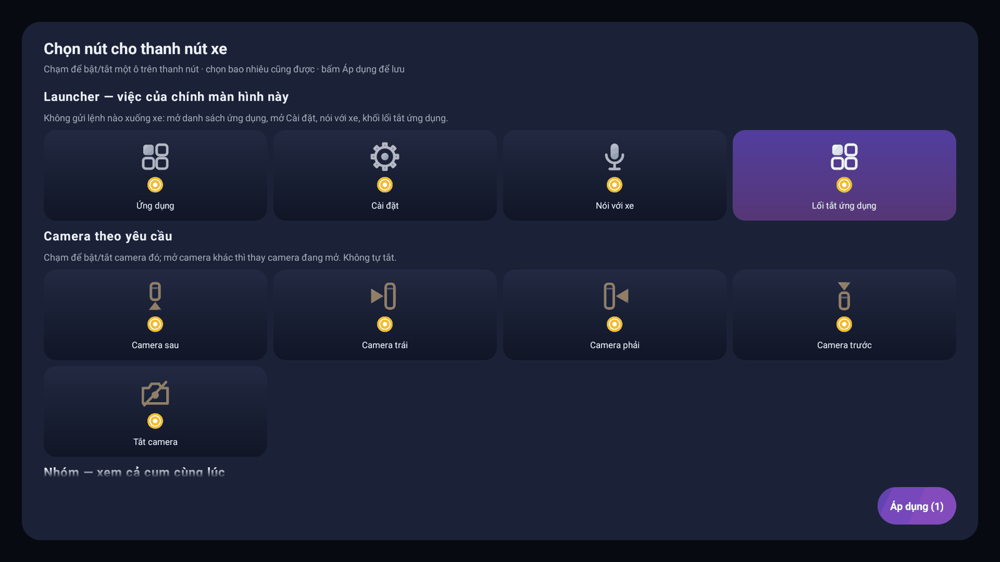

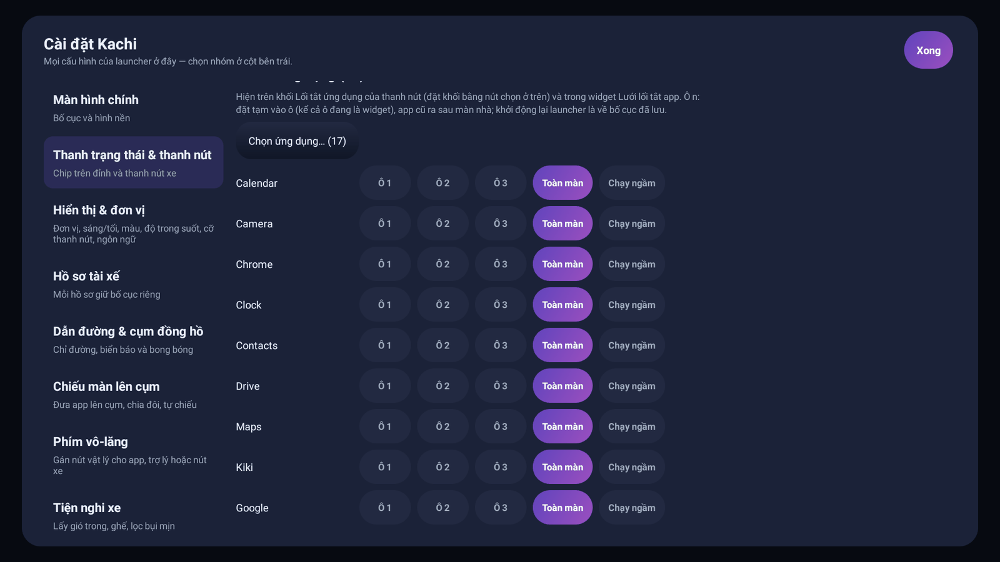
Hiển thị & đơn vị
Ở đâu: Cài đặt › Hiển thị & đơn vị
- Đơn vị hiển thị — đổi một lần, mọi ô và chip đổi theo.
- Giao diện Sáng / Tối / Tự động (“Tự động” = tối từ 18h đến 6h). Đổi bảng màu áp ngay, app trong ô vẫn chạy.
- Kính thật (làm mờ nền), Màu nhấn (có “Theo ảnh nền”), Tông thẻ, hình xe.
- Độ trong suốt nền 0–100 % (2.88): một mức chung cho nền thanh trên, thanh nút xe và widget. 0 % như cũ, 100 % trong hoàn toàn; chữ và icon giữ nguyên. Thả tay mới áp. Hình nền sáng mà kéo cao thì chữ có thể khó đọc.
- Thanh nút xe › Cỡ 50–150 % (2.89): kéo để xem trước, thả tay là áp; vùng ô, widget, icon tự co giãn theo.
- Ngôn ngữ: Theo xe · Tiếng Việt · English · 简体中文 · ไทย · Bahasa Melayu. “Theo xe” = tiếng Việt khi xe đặt tiếng Việt, còn lại tiếng Anh. Giọng nói chỉ hiểu tiếng Việt ở mọi ngôn ngữ.
Display & units
Where: Settings › Display & units
- Display units — change once, every slot and chip follows.
- Theme Light / Dark / Auto (“Auto” = dark from 18:00 to 06:00). A palette change applies in place; apps in slots keep running.
- Real glass (blur the backdrop), Accent colour (including “From wallpaper”), Card tone, car image.
- Background transparency 0–100 % (2.88): one level for the status bar, car button bar and widget backgrounds. 0 % looks as before, 100 % fully clear; text and icons stay solid. Applies when you let go. On a bright wallpaper, high values can make text hard to read.
- Car button bar › Size 50–150 % (2.89): drag to preview, release to apply; slots, widgets and icons rescale.
- Language: By car · Tiếng Việt · English · 简体中文 · ไทย · Bahasa Melayu. “By car” = Vietnamese when the car is set to Vietnamese, otherwise English. Voice commands understand Vietnamese only, whatever the display language.

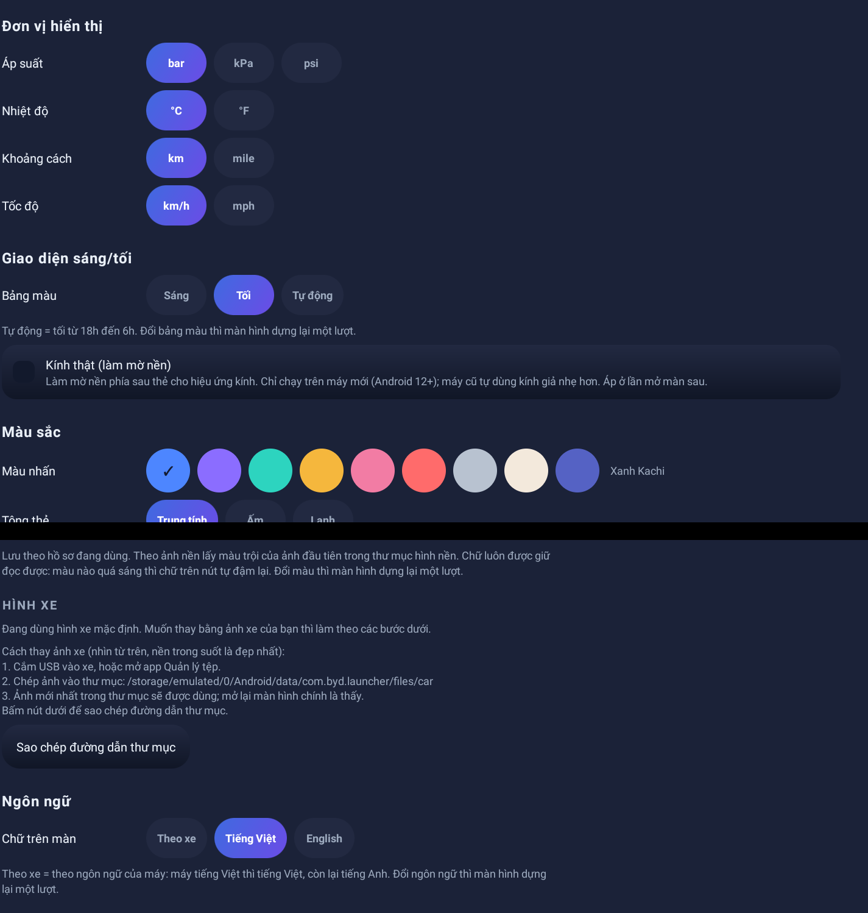

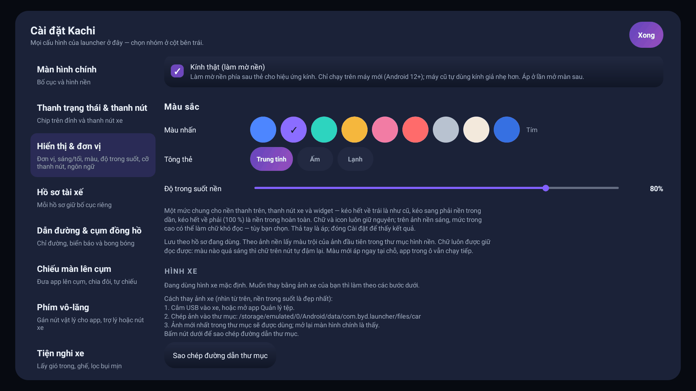

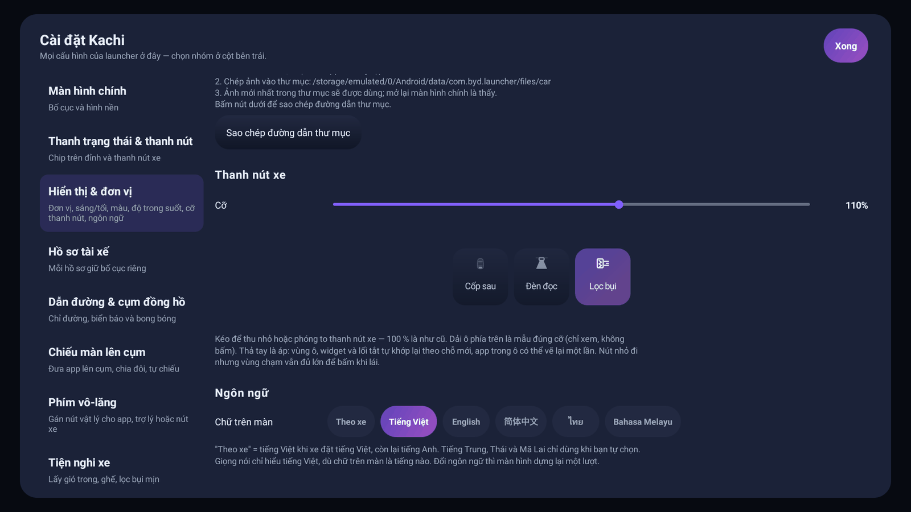
Phần 9Part 9
Tiện nghi và điều khiển xeCar comfort and controls
Việc Kachi tự làm cho xe, và cách bấm nút xe.
What Kachi does for the car automatically, and how car buttons work.
Ở đâu: Cài đặt › Tiện nghi xe
| Khối | Làm gì |
|---|---|
| Lấy gió trong | Nổ máy thì tự lấy gió trong — xe quên chế độ này mỗi lần khởi động, Kachi bật lại. |
| Tự sấy kính khi mưa 🚗 | Hai ô độc lập: Mưa thì tự bật sấy kính trước · … sấy kính sau + gương. Đọc cảm biến mưa mỗi 5 phút. Đang mưa mà sấy tắt thì Kachi bật lại; hết mưa chỉ tắt cái Kachi đã bật. Dòng tình trạng dưới hai ô cho biết lần kiểm gần nhất của từng kính (giờ · mưa/khô · xe báo · lệnh có tới xe không). Chưa xác nhận trong một buổi mưa thật. |
| Camera theo xi-nhan | Xem mục 10. |
| Ghế mát / sưởi | Tự chỉnh ghế theo nhiệt độ + chế độ Làm mát / Sưởi + mức từng ghế. Chạm một ghế trên sơ đồ: tắt → mức 1 → mức 2. Mát và sưởi loại trừ nhau. |
| Lọc bụi mịn | Tự lọc khi không khí bẩn · Lọc ngay một lượt; dòng bụi mịn hiện tại (máy ảo: “chưa đọc được”). |
Mọi việc tự động theo một luật: chỉ hoàn tác cái Kachi đã bật — bạn tự bật tay thì Kachi không đụng.
Where: Settings › Car comfort
| Block | What it does |
|---|---|
| Recirculation | Recirculate cabin air on engine start — the car forgets this mode on every start; Kachi turns it back on. |
| Auto-defrost when it rains 🚗 | Two independent boxes: Turn on the front defroster when it rains · … the rear defroster + mirrors. The rain sensor is read every 5 minutes. If it rains and a defroster is off, Kachi turns it on; when the rain stops it only turns off what Kachi turned on. A status line under the boxes shows the latest check per window (time · rain/dry · what the car reports · whether the command reached the car). Not yet confirmed in real rain. |
| Camera on turn signal | See section 10. |
| Seat cooling / heating | Adjust the seats automatically + Cool / Heat mode + a level per seat. Tap a seat on the diagram: off → level 1 → level 2. Cooling and heating exclude each other. |
| Air purifier | Purify when the air is dirty · Purify now; a current PM2.5 line (emulator: “not read”). |
All automations follow one rule: only undo what Kachi turned on — anything you switched by hand is left alone.

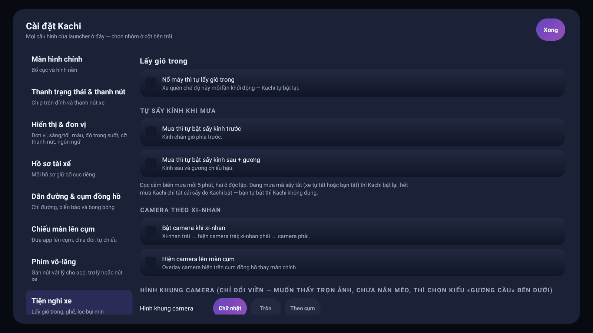

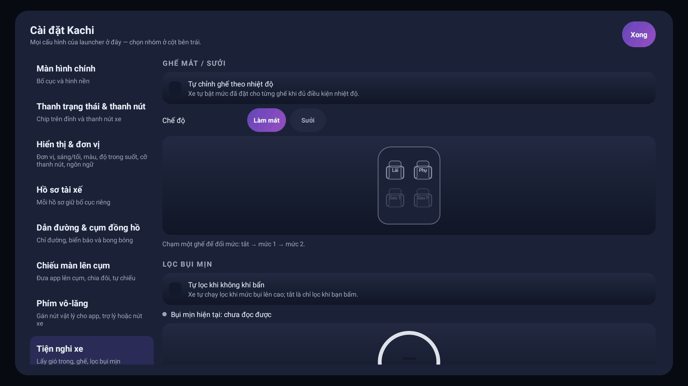
Nút xe ở thanh nút và trong ô
- Ô Gió −/+: bấm − khi đang mức 1 thì chuyển AUTO; bấm + khi đang AUTO thì về chỉnh tay. Chip gió ghi “AUTO n” khi tự động.
- Mở cốp chỉ chạy khi xe đứng yên. Mở cửa sổ trời bằng giọng sẽ hỏi lại (đóng thì không).
- Kachi đã bỏ hẳn: khoá xe, âm lượng, độ sáng màn, mở khoá cửa, đèn viền — dùng màn hình của xe.
- Từng nút có trạng thái riêng theo đời xe; nút bấm không ăn thường là do ROM xe không cho ghi.
Car buttons on the bar and in slots
- The Fan −/+ tile: − at level 1 switches to AUTO; + while AUTO returns to manual. The fan chip reads “AUTO n” when automatic.
- Opening the trunk only works while stationary. Opening the sunroof by voice asks first (closing does not).
- Removed for good: car lock, volume, screen brightness, door unlock, ambient light — use the car’s own screen.
- Each button has its own status per car model; a button that does nothing is usually one the car’s ROM does not let apps write.
Phần 10Part 10
Camera: theo xi-nhan và theo yêu cầuCameras: on turn signal and on demand
Bốn camera sau · trái · phải · trước, mỗi camera chỉnh riêng.
Four cameras — rear · left · right · front — each tuned on its own.
Ở đâu: Cài đặt › Tiện nghi xe › Camera theo xi-nhan
- Bật camera khi xi-nhan: xi-nhan trái → camera trái nổi trên màn; phải → camera phải. Giữ tới khi đèn xi-nhan tắt.
- Hiện camera lên màn cụm: camera hiện trên cụm đồng hồ thay vì màn chính.
- Hình khung camera: Chữ nhật / Tròn / Theo cụm — chỉ đổi viền.
- Kiểu hình: Nắn thẳng (mặc định, sát thân xe) · Thẳng rộng (thấy xa) (gần thẳng, thấy tới phía sau xa; từ 2.94 thân xe và vạch kẻ thẳng hơn, camera sau/trước hiện như Nắn thẳng) · Gương cầu (thấy hết) (trọn ảnh mắt cá, không cắt gì). Dùng Thẳng rộng thì nên để khung Chữ nhật.
- Thu phóng 50–150 %, phóng quanh tâm khung.
- Từng camera: chọn Sau / Trái / Phải / Trước rồi chỉnh riêng: ▶ Xem thử camera này · Góc mặc định · kéo khung đặt chỗ + Về góc mặc định · Cỡ 50–150 % · Hình khung · Kiểu hình (“Theo chung” = theo hai hàng chung) · Xoay (Không xoay · ↺ 90° · ↻ 90° · 180°) · Lật gương. Chỉnh lúc camera đang hiện là thấy ngay. Chỗ, cỡ, hình, kiểu lưu theo hồ sơ; xoay/lật lưu theo xe.
- Nếu camera không hiện: hàng thử camera số cho từng bên — thử từng số, hình bật lên ngay.
Where: Settings › Car comfort › Camera on turn signal
- Camera on turn signal: left signal → the left camera floats on screen; right → right camera. It stays until the signal lamp goes off.
- Show the camera on the cluster: the camera appears on the instrument cluster instead of the main screen.
- Camera window shape: Rectangle / Round / Cluster band — changes the outline only.
- View style: Straight (default, close to the car body) · Wide straight (see far) (nearly straight, reaches far behind; since 2.94 the body and road lines are straighter, and rear/front cameras show as Straight) · Convex mirror (see all) (the whole fisheye picture, nothing cropped). With Wide straight, a Rectangle window works best.
- Zoom 50–150 %, about the window centre.
- Each camera: pick Rear / Left / Right / Front and tune it on its own: ▶ Preview this camera · Default corner · drag the frame to place it + Back to the default corner · Size 50–150 % · Window shape · View style (“Use shared” = follow the shared rows) · Rotate (No rotation · ↺ 90° · ↻ 90° · 180°) · Mirror video. Changes apply at once while that camera is showing. Position, size, shape and style are saved per profile; rotation/mirroring per car.
- If a camera does not show: a try camera no. row per side — try each number, the picture appears at once.

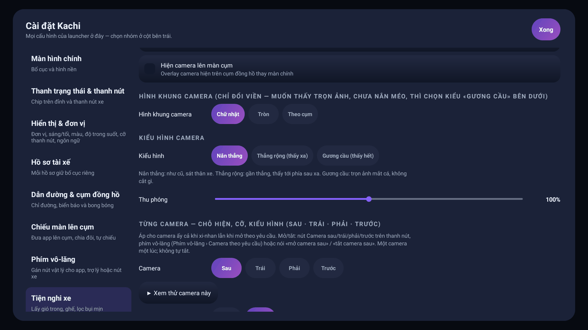

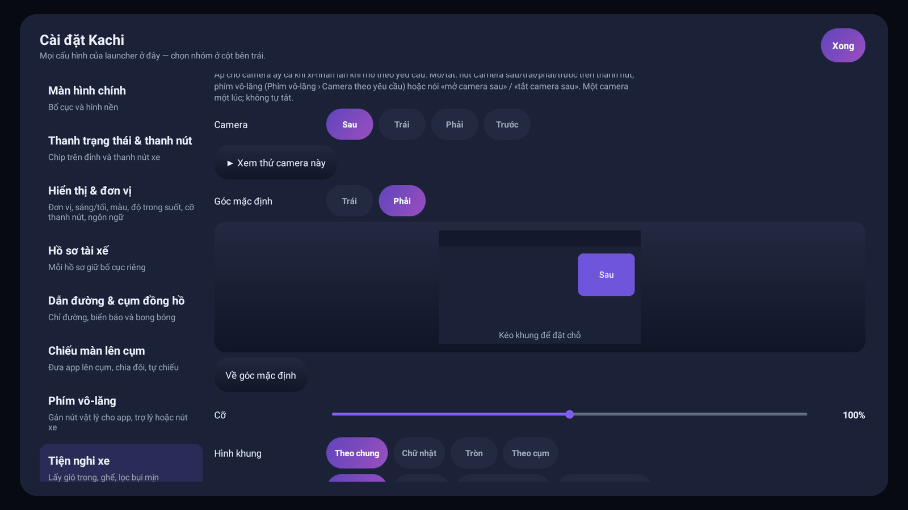

Camera theo yêu cầu (không cần xi-nhan)
Mở một trong 4 camera bất cứ lúc nào, hiện ở chỗ đã chọn cho camera đó (màn chính, hoặc cụm nếu bật “Hiện camera lên màn cụm”).
- Thanh nút: Chọn nút trên thanh… → khối Camera theo yêu cầu: Camera sau · trái · phải · trước · Tắt camera. Nút camera đang mở sáng lên.
- Ô giữa màn: chạm ô trống → khối Camera theo yêu cầu (trộn được với nút xe khác).
- Phím vô-lăng: Bước 2 chọn Camera theo yêu cầu (mục 13).
- Giọng nói: “mở cam trái” · “cam sau” · “xem cam lùi” · “tắt cam”. Nói lại câu mở lần hai là tắt.
Một camera một lúc: mở camera khác là thay; bấm lại đúng camera đang hiện là tắt; không tự tắt theo giờ. Đang mở camera mà bật xi-nhan thì camera xi-nhan hiện, hết xi-nhan thì camera vừa mở quay lại. “tắt camera” tắt camera đang mở; không có camera nào đang mở thì tắt Camera 360 của xe. Gọi thẳng Camera 360: “bật camera 360” / “tắt camera 360”.
Camera on demand (no turn signal needed)
Open any of the 4 cameras at any time; it shows where you placed that camera (main screen, or the cluster if “Show the camera on the cluster” is on).
- Button bar: Choose bar buttons… → the Camera on demand block: Rear · Left · Right · Front camera · Camera off. The open camera’s button lights up.
- A home-screen slot: tap an empty slot → the Camera on demand block (mixable with car buttons).
- Steering-wheel key: choose Camera on demand in Step 2 (section 13).
- Voice (Vietnamese): “mở cam trái” (open left cam) · “cam sau” (rear cam) · “xem cam lùi” (reversing cam) · “tắt cam” (camera off). Saying the open phrase again turns it off.
One camera at a time: another camera replaces it; pressing the camera that is showing turns it off; it never times out. A turn signal still shows its camera and the on-demand one comes back afterwards. “tắt camera” closes the open camera; with none open it turns the car’s own 360 camera off. To call the 360 camera directly: “bật camera 360” / “tắt camera 360”.


Phần 11Part 11
Dẫn đường lên cụm và HUDNavigation on the cluster and HUD
Kachi đọc chỉ dẫn của app dẫn đường và vẽ lên cụm đồng hồ / HUD.
Kachi reads turn-by-turn guidance from your navigation app and draws it on the cluster / HUD.
Ở đâu: Cài đặt › Dẫn đường & cụm đồng hồ (khối Dẫn đường + HUD)
Bật “Dẫn đường lên cụm đồng hồ”
Bật là Kachi tự xin quyền đọc thông báo qua kênh của xe — không phải vào Cài đặt hệ thống. Các dòng trạng thái bên dưới cho biết đang dẫn gì, cụm, HUD, lần ghi gần nhất.
Mở app dẫn đường và dẫn như bình thường
Chỉ dẫn hiện trên cụm. HUD kính lái chỉ nhận dẫn đường từ Google Maps — VietMap và Waze không lên HUD. Sau mỗi lần tắt/mở xe Kachi tự nối lại nguồn cho HUD.
Tuỳ chỉnh
Chế độ hiện trên cụm · Chạy chữ tên đường dài (tắt thì viết tắt) · App dẫn đường mặc định (khi nói “dẫn đường tới …” không nêu app) · Kết nối lại nguồn dẫn đường (khi cụm im mà app vẫn chạy).
Biển báo tốc độ: Hiện biển báo tốc độ · giới hạn sắp tới · Hiện cảnh báo camera · Cỡ biển báo · vị trí ngang/dọc (kéo trong khung xem trước). Bong bóng VietMap: Hiện bong bóng VietMap trên cụm và Tự mở VietMap cho bong bóng (mở VietMap chạy nền khi nổ máy để bóng có sẵn). Ẩn bóng chỉ có tác dụng với bản VietMap hỗ trợ lệnh ẩn — không hỗ trợ thì Cài đặt báo.
Where: Settings › Navigation & cluster (the Navigation + HUD block)
Turn on “Navigation on the cluster”
Kachi then grants itself notification access through the car’s channel — no trip into system Settings. The status lines below show what is being guided, the cluster, the HUD and the last write.
Open your navigation app and navigate as usual
Guidance appears on the cluster. The windscreen HUD only shows Google Maps guidance — VietMap and Waze do not reach the HUD. After every engine off/on Kachi reconnects the HUD source by itself.
Fine-tune
Cluster display mode · Scroll long street names (off = abbreviated) · Default navigation app (used when you say “dẫn đường tới …” without naming an app) · Reconnect the navigation source (when the cluster goes quiet while the app still runs).
Speed limit badge: Show the speed limit badge · upcoming limit · Show camera alerts · Badge size · position across/down (drag in the preview frame). VietMap bubble: Show the VietMap bubble on the cluster and Auto-open VietMap for the bubble (starts VietMap in the background at engine start so the bubble is ready). Hiding the bubble only works with a VietMap build that supports the hide command — otherwise Settings tells you.


Sổ địa chỉ
Thêm địa chỉ…: tên gọi + văn bản địa chỉ + toạ độ (tuỳ chọn, dán tay từ app bản đồ — Kachi không xin quyền ghi GPS). Sổ đi theo hồ sơ. Nói “về nhà”, “đến công ty”, “đi <tên>”. VietMap chỉ nhận toạ độ, Google Maps nhận cả chữ — Kachi chọn app theo dữ liệu của mục.
Tự dẫn đường theo lịch 🚗
Thêm lịch…: khung giờ · thứ trong tuần · Chỉ dẫn khi đã có GPS · điểm đến trong sổ · app dẫn đường. Đúng giờ, đúng thứ thì tự mở app dẫn tới đó; mỗi khung giờ chỉ dẫn một lần trong ngày. Sổ địa chỉ trống thì hộp báo phải thêm địa chỉ trước. Chưa chạy một khung giờ thật trên xe.
Address book
Add an address…: a name + address text + coordinates (optional, pasted by hand from a map app — Kachi asks for no GPS write permission). The book follows the profile. Say “về nhà” (go home), “đến công ty” (to the office), “đi <name>”. VietMap takes only coordinates, Google Maps takes text too — Kachi picks the app from the entry’s data.
Scheduled navigation 🚗
Add a schedule…: time window · weekdays · Only with GPS · a destination from the book · a navigation app. At the right time on the right day it opens the app to that place; each window navigates once per day. With an empty address book the box asks you to add an address first. Not yet run in a real time window on a car.


Phần 12Part 12
Chiếu app lên cụm đồng hồCasting apps to the cluster
Đưa một app lên cả cụm, hoặc hai app chia đôi.
Put one app on the whole cluster, or two apps side by side.
Ở đâu: Cài đặt › Chiếu màn lên cụm
- Bật Cluster Cast: mở cụm để nhận cửa sổ app. Tắt là trả cụm về đồng hồ ngay.
- Hiện nút nổi chiếu cụm: nút hoa Kachi nổi trên màn, chạm để chiếu. Tắt chỉ ẩn nút — vẫn chiếu được bằng nút Chiếu ngay, giọng nói, tự chiếu.
- Tỉ lệ chia đôi 1:9 … 9:1 (2.96): chia cụm cho hai app.
- Tự chiếu khi nổ máy: Tự chiếu toàn cụm (một app chiếm cả cụm) hoặc Tự chiếu chia đôi (hai app hai nửa) — loại trừ nhau; chọn app toàn cụm / nửa trái / nửa phải.
- Chiếu ngay: Chiếu toàn cụm… · Chiếu nửa trái… · Chiếu nửa phải… · Dừng chiếu.
- Cứu hộ: Trả cụm về đồng hồ; Dọn sạch cụm dừng chiếu, tắt các app đang tranh cụm và đặt lại cấu hình màn cụm (không hoàn tác được).
CarPlay / Android Auto luôn chiếu toàn cụm. Nền quanh bản đồ trên cụm theo sáng/tối của xe (2.94, đổi ngay từ 2.96).
Chỉ hiện khi có cụm thật 🚗
Kiểu chiếu cụm: Bo tròn / Chữ nhật. Áp ở lượt mở chiếu kế tiếp khi cụm trống; muốn áp ngay thì dừng chiếu rồi bấm Áp ngay (tắt rồi mở lại chiếu). Ở Chữ nhật, khung ADAS trắng bên phải do phần mềm xe vẽ cố định, không thu nhỏ được. Khung và DPI (khi đang chiếu): chỉnh vị trí, kích thước, DPI từng app — lưu theo hồ sơ, áp từ lần chiếu sau.
Where: Settings › Cluster cast
- Enable Cluster cast: opens the cluster to app windows. Turning it off hands the cluster back to the gauges at once.
- Show the floating cast button: the Kachi blossom floating over the screen; tap it to cast. Off only hides the button — you can still cast with Cast now, voice or autostart.
- Split ratio 1:9 … 9:1 (2.96): divides the cluster between two apps.
- Cast on engine start: Auto-cast full cluster (one app takes the whole cluster) or Auto-cast split view (two apps, one half each) — mutually exclusive; pick the full / left-half / right-half app.
- Cast now: Cast full cluster… · Cast to the left half… · Cast to the right half… · Stop casting.
- Rescue: Hand the cluster back to the gauges; Deep-clean the cluster stops casting, force-stops apps fighting over the cluster and resets the cluster display settings (cannot be undone).
CarPlay / Android Auto always cast full-screen. The background around the map follows the car’s day/night mode (2.94, switching immediately since 2.96).
Only shown with a real cluster 🚗
Cluster cast style: Rounded / Rectangle. Applies at the next cast while the cluster is empty; to apply now, stop casting and tap Apply now (stop and reopen casting). In Rectangle, the white ADAS panel on the right is drawn by the car’s firmware and cannot be shrunk. Frame and DPI (while casting): position, size and DPI per app — saved per profile, applied from the next cast.


Phần 13Part 13
Phím vô-lăng và phím vật lýSteering-wheel and physical keys
Gán một nút vật lý cho app, trợ lý, nút xe hoặc camera — ba bước.
Bind a physical button to an app, an assistant, a car control or a camera — three steps.
Ở đâu: Cài đặt › Phím vô-lăng
Bật “Nhận nút vật lý”
Bật là Kachi tự cấp lại dịch vụ Hỗ trợ (trợ năng) qua kênh của xe. Dòng “Phím-thoại” cho biết mối nối đang sống hay mất.
Học phím (nếu nút chưa có trong danh sách)
Học phím mới… rồi bấm nút trên vô-lăng (hoặc vặn núm) để Kachi học mã.
Thêm gán… — ba bước
Bước 1 — chọn nút. Bước 2 — nút này làm gì: Mở ứng dụng · trợ lý / Camera theo yêu cầu / Kính / Cửa & khoang / Đèn / Năng lượng & sạc / Khí hậu & không khí / Thân xe · cửa · kính / Giải trí · cụm · HUD. Bước 3 — chọn việc: app, trợ lý của xe, Kachi nghe (tại máy), việc của nút xe (vd Gió +1), hoặc camera nào.
- Nút bật/tắt và mở/đóng (kể cả cốp) có việc Đảo; nút nhiều mức có Kế tiếp — một phím là đủ. Cốp: đảo theo lệnh cuối Kachi đã gửi; đang chạy mà đảo ra “mở” thì Kachi đóng.
- Phím đã gán mất chức năng cũ (vd núm âm lượng gán sang gió thì không chỉnh âm lượng nữa).
- Núm bệ giữa và nút vô-lăng gán riêng (2.88): khi học phím, hộp ghi nguồn núm yên ngựa hay vô-lăng; nút lưu ra có đuôi nguồn. Xe không đọc được nguồn thì phím chạy như cũ. 🚗 chỉ thấy sau khi học phím trên xe.
- Kiểm tra / Sửa ngay: khi phím chết lúc đang chạy — cấp lại quyền, nối lại; giao diện khởi động lại một nhịp rồi tự về màn chính (trừ khi màn camera của xe đang hiện). Sau tắt/mở máy Kachi đã tự kiểm và tự sửa.
Where: Settings › Steering-wheel keys
Turn on “Listen to physical buttons”
Kachi then re-grants its accessibility service through the car’s channel. The “Voice key” line tells you whether the binding is alive.
Learn the key (if it is not listed yet)
Learn a new key…, then press the wheel button (or turn the knob) so Kachi captures its code.
Add binding… — three steps
Step 1 — choose a button. Step 2 — what this button does: Open an app · assistant / Camera on demand / Windows / Doors & openings / Lights / Energy & charging / Climate & air / Body · doors · windows / Entertainment · cluster · HUD. Step 3 — choose the action: an app, the car’s assistant, Kachi listens (on-device), a car action (e.g. Fan +1), or which camera.
- On/off and open/close controls (trunk included) offer Toggle; multi-level controls offer Next — one key is enough. Trunk: toggles from the last command Kachi sent; while driving, a toggle towards “open” closes instead.
- A bound key loses its original function (e.g. a volume knob bound to the fan no longer changes volume).
- Centre-console knob and wheel buttons bound separately (2.88): when learning, the box shows the source — centre-console knob or steering wheel; the saved button carries that suffix. If the car can’t report the source, the key works as before. 🚗 only visible after learning keys in the car.
- Check / Fix now: when keys die while driving — re-grants and rebinds; the interface restarts for a beat and returns to the home screen by itself (not while the car’s camera screen is showing). After an engine off/on Kachi already checks and repairs on its own.


Phần 14Part 14
Nói với xe — “Hey Kachi”Talk to the car — “Hey Kachi”
Nhận dạng tiếng Việt ngay trên xe, tiếng nói không gửi ra mạng.
Vietnamese speech recognition on the head unit; no audio leaves the car.
Ở đâu: Cài đặt › Giọng nói
Tải mô hình nghe
Nhận dạng giọng nói (tại máy) › Tải mô hình tiếng Việt (khoảng 74 MB, một lần). Chưa tải mà bấm Nói với xe thì Kachi báo “Chưa tải mô hình nhận dạng” kèm nút Mở Cài đặt.
(Tuỳ chọn) Tải gói giọng đọc
Giọng đọc offline (tại máy) › Tải gói giọng đọc (khoảng 61 MB) để Kachi đọc câu trả lời không cần mạng. Xe không có mạng: chép cả cây thư mục gói vào
Android/data/com.byd.launcher/files/sherpa/import/…rồi bấm Tải — máy vẫn kiểm sha256 từng tệp.Mở một lượt nói
Nút Nói với xe trên thanh nút · nút mic trên thanh trạng thái · phím vô-lăng gán “Kachi nghe (tại máy)” · hoặc “Hey Kachi” (thử nghiệm, mặc định tắt vì tốn pin/CPU; nghe nền khi màn sáng; nghe nhầm nhiều lần thì tự tắt). Lần đầu sau khi mở xe có thể phải chờ nạp giọng nói.
Cách nói
- Nói liền một hơi — ngừng giữa câu lâu là Kachi coi như hết câu.
- Huỷ: chạm ra ngoài tấm chữ hoặc chờ khoảng 8 giây. Nút Back không huỷ (cố ý).
- Ghép hai việc bằng “và” / “rồi”. Số nói bằng chữ hay số đều được.
- Kết thúc hội thoại: “tạm biệt”, “cảm ơn”, “thôi được rồi”, “không cần”, “kết thúc”, “thoát”…
- Không hiểu thì Kachi nói rõ lý do (chưa rõ việc, thiếu đối tượng, việc không đi với thứ đó, hoặc tính năng đã bỏ).
Where: Settings › Voice
Download the speech model
Speech recognition (on-device) › Download the Vietnamese model (about 74 MB, once). Pressing Talk to car before that shows “Recognition model not downloaded” with an Open Settings button.
(Optional) Download the voice pack
Offline voice (on-device) › Download the voice pack (about 61 MB) so Kachi speaks its replies without a network. No network in the car: copy the whole pack folder tree into
Android/data/com.byd.launcher/files/sherpa/import/…and press Download — every file is still sha256-checked.Start a turn
The Talk to car button on the bar · the mic button on the status bar · a steering-wheel key bound to “Kachi listens (on-device)” · or “Hey Kachi” (experimental, off by default because of battery/CPU; listens while the screen is on; turns itself off after repeated false triggers). The first turn after starting the car may wait for the voice to load.
How to speak
- Say it in one breath — a long pause mid-sentence ends the turn.
- Cancel: tap outside the card or wait about 8 seconds. Back does not cancel (by design).
- Chain two actions with “và” / “rồi” (and / then). Numbers can be spoken as words or digits.
- End the conversation: “tạm biệt” (goodbye), “cảm ơn” (thanks), “thôi được rồi”, “không cần”, “kết thúc”, “thoát”…
- When Kachi does not understand it says why (unclear intent, missing object, action doesn’t fit, or a removed feature).


Nói được những gì (tóm tắt)
Danh sách đầy đủ, luôn khớp với xe của bạn (kể cả tên hồ sơ, app, địa chỉ thật), nằm ở Cài đặt › Giọng nói › Câu lệnh nói được.
| Nhóm | Ví dụ |
|---|---|
| Bật / tắt nút xe | “bật đèn đọc” · “bật lọc bụi” · “bật sấy kính trước” |
| Kính · cốp · cửa sổ trời | “mở kính lái” · “mở kính trước trái một nửa” · “mở cốp” · “mở hết kính” |
| Điều hoà · ghế | “đặt nhiệt độ 24 độ” · “tăng gió” · “bật sưởi ghế” |
| Hỏi thông tin xe | “pin còn bao nhiêu” · “nhiệt độ ngoài trời bao nhiêu” |
| App · app vào ô | “mở YouTube” · “đóng YouTube” · “mở YouTube vào ô số 2” |
| Nhạc | “phát nhạc” · “bài tiếp theo” · “phát bài Diễm Xưa” |
| Dẫn đường · địa chỉ | “dẫn đường đến Bitexco bằng Waze” · “về nhà” |
| Camera | “mở cam trái” · “tắt cam” · “tắt camera 360” |
| Hồ sơ · bố cục · launcher | “chuyển sang hồ sơ Test” · “bố cục hai ô” · “mở cài đặt” |
Nói thiếu (chỉ “kính”, “cốp”) thì Kachi hỏi lại “Mở hay đóng …?”. Câu ghép tắt nhiều thứ (“tắt điều hòa và đèn đọc”) tắt cả hai.
Xác nhận, đọc phản hồi, micro, nhạc
- Đọc phản hồi bằng giọng — Kachi đọc to câu trả lời (vd “Đã đóng kính lái”).
- Hỏi xác nhận trước khi chạy — mặc định Kachi làm luôn; tích việc nào thì việc đó hỏi lại. Đọc to câu hỏi xác nhận.
- Nguồn micro — “Tự chọn” thử MIC trước rồi nguồn khử ồn; đổi khi micro nghe kém.
- App nhạc mặc định — dùng khi nói “phát nhạc” không nêu app.
What you can say (summary)
The complete list, always matching your car (including your real profile, app and address names), is in Settings › Voice › Spoken commands. Phrases are Vietnamese; the English is only a gloss.
| Group | Examples (as spoken → meaning) |
|---|---|
| Car toggles | “bật đèn đọc” reading light on · “bật lọc bụi” purifier on · “bật sấy kính trước” front defrost on |
| Windows · trunk · sunroof | “mở kính lái” driver window open · “mở kính trước trái một nửa” front-left half open · “mở cốp” open trunk · “mở hết kính” all windows open |
| AC · seats | “đặt nhiệt độ 24 độ” set 24° · “tăng gió” fan up · “bật sưởi ghế” seat heat on |
| Ask about the car | “pin còn bao nhiêu” battery left? · “nhiệt độ ngoài trời bao nhiêu” outside temperature? |
| Apps · app into a slot | “mở YouTube” · “đóng YouTube” · “mở YouTube vào ô số 2” open YouTube in slot 2 |
| Music | “phát nhạc” play music · “bài tiếp theo” next track · “phát bài Diễm Xưa” play a song by name |
| Navigation · places | “dẫn đường đến Bitexco bằng Waze” navigate with Waze · “về nhà” go home |
| Cameras | “mở cam trái” left camera · “tắt cam” camera off · “tắt camera 360” 360 camera off |
| Profiles · layouts · launcher | “chuyển sang hồ sơ Test” switch profile · “bố cục hai ô” two-slot layout · “mở cài đặt” open settings |
An incomplete phrase (just “kính”, “cốp”) makes Kachi ask “Open or close …?”. A compound off command (“tắt điều hòa và đèn đọc”) turns both off.
Confirmation, spoken replies, mic, music
- Speak replies out loud — Kachi reads its answer (e.g. “Driver window closed”).
- Ask before running — by default Kachi just acts; tick an action and that action asks first. Read confirmation questions aloud.
- Microphone source — “Automatic” tries MIC first, then the noise-cancelled source; change it if the mic hears poorly.
- Default music app — used when you say “phát nhạc” without naming an app.


Dạy Kachi tên app (2.91)
Giọng nói chỉ nghe tiếng Việt, nên app tên tiếng Anh/khó đọc (Netflix, Spotify…) hay bị không hiểu. Cài đặt › Giọng nói › Dạy Kachi tên app: chọn app → bấm 🎤 → nói “mở <tên>” như lúc lái, 2–3 lần (lần 2 nói kèm ô: “đưa <tên> vào ô số hai”). Kachi lưu chữ nó nghe được từ giọng bạn (không lưu tiếng). Cũng gõ được tên gọi riêng. Kachi chặn tên trùng lệnh xe, trùng địa chỉ hay app khác. Lối tắt: nhấn giữ app trong ngăn kéo, hoặc nút “Dạy tên «…»” khi Kachi không hiểu. Tên dạy lưu theo hồ sơ.
Teach Kachi app names (2.91)
Voice understands Vietnamese only, so English or hard-to-say app names (Netflix, Spotify…) often fail. Settings › Voice › Teach Kachi app names: pick the app → tap 🎤 → say “mở <name>” as you would while driving, 2–3 times (the 2nd take with a slot: “đưa <name> vào ô số hai”). Kachi stores the text it heard from your voice (no audio is kept). You can also type a nickname. Kachi rejects names that clash with car commands, saved places or other apps. Shortcuts: long-press the app in the drawer, or the “Teach «…»” button when Kachi doesn’t understand. Taught names are saved per profile.


Phần 15Part 15
Nổ máy: mở app và phát nhạcAt ignition: open apps and play music
Mỗi lần nổ máy, Kachi mở sẵn app và nhạc bạn chọn.
On every engine start, Kachi opens the apps and music you chose.
Ở đâu: Cài đặt › Hệ thống & quyền › Mở app khi nổ máy
Mở app khi nổ máy
+ Thêm app (tối đa 6), mỗi app Chạy nền (mở ẩn rồi đưa ra sau màn chính — không che gì) hoặc Mở bình thường (chỉ 1 app). Chạy một lần mỗi lần nổ máy, khoảng 15–45 giây sau khi màn chính sẵn sàng. App đã ở ô hoặc đang chiếu cụm thì bỏ qua. Bố cục không có ô app thì Kachi tự dựng chỗ chạy tạm. App hệ thống không chạy nền được — đặt nó vào ô.
Dòng Lần nổ máy gần nhất ghi lý do từng app (vd “Waze: đã chạy nền”). Có lỗi thì chụp đúng dòng này gửi về.
Tự mở nhạc khi lên xe
Nhạc: Tắt · Theo player của xe · YouTube Music · YouTube. Chọn YouTube/YouTube Music thì có ô Phát gì (từ khoá hoặc link YouTube; để trống = phát tiếp). App nhạc đang ở một ô thì phát ở ô đó. Đang có nguồn khác phát thì Kachi không đè.
YouTube phát tiếp (2.94–2.97): để trống ô Phát gì thì Kachi nhớ video đang xem (lưu ngay khi đổi bài), lên xe mở lại đúng video, đúng giây, toàn màn hình. Mạng chưa có lúc nổ máy thì thử lại tới 1 phút (app khác vẫn mở bình thường); chọn đúng bài trong 5 kết quả đầu, cùng tên thì ưu tiên đúng kênh; không tìm được thì chỉ mở YouTube, không phát bừa.
Where: Settings › System & permissions › Open apps at ignition
Open apps at ignition
+ Add apps (up to 6), each set to Run in background (opened hidden, then moved behind the home screen — covers nothing) or Open normally (one app only). It runs once per engine start, about 15–45 seconds after the home screen is ready. Apps already in a slot or being cast are skipped. With no app slot in the layout, Kachi builds a temporary place to run them. System apps can’t run in the background — put them in a slot.
The Last ignition line gives each app’s outcome (e.g. “Waze: running in background”). If something fails, screenshot exactly this line.
Play music when you get in
Music: Off · Car’s player · YouTube Music · YouTube. With YouTube/YouTube Music there is a What to play field (keyword or YouTube link; empty = resume). If the music app sits in a slot, it plays there. If another source is already playing, Kachi doesn’t override it.
YouTube resume (2.94–2.97): leave What to play empty and Kachi remembers the video you were watching (saved as soon as the track changes), then reopens that video at the same second, full screen. If the network isn’t up at engine start it retries for up to 1 minute (other apps open normally meanwhile); it picks the right one among the first 5 results, preferring the same channel; if it can’t find it, it just opens YouTube rather than playing something random.


Phần 16Part 16
Cập nhật qua mạngOver-the-air updates
Không cần máy tính.
No computer needed.
Ở đâu: Cài đặt › Hệ thống & quyền › Bảo trì
- Kiểm tra cập nhật: Kachi hỏi GitHub (thư mục
apk/nhánhmain), có bản mới hơn thì hiện hộp “Có bản mới”; đồng ý là tải và cài đè. Hồ sơ và cấu hình giữ nguyên. Không có thì nút ghi “đang ở bản mới nhất”. - Tự động cập nhật: mở Kachi là tự dò; có bản mới sẽ hỏi trước khi tải; không có thì im lặng.
- Xe phải có mạng lúc dò. Sau khi cài, xem Giới thiệu để chắc số bản.
Where: Settings › System & permissions › Maintenance
- Check for updates: Kachi asks GitHub (the
apk/folder onmain); if there is a newer build it shows a “New version: v…” box; accept to download and install over the top. Profiles and settings are kept. Otherwise the button reads “up to date (v…)”. - Auto-update: Kachi checks whenever it opens; a new build is asked about first; nothing new means silence.
- The car needs a network while checking. After installing, look at About to confirm the version.


Phần 17Part 17
Gửi log và xử lý sự cốLogs and troubleshooting
Kachi tự ghi nhật ký; bạn chỉ cần chép thư mục và chụp màn hình.
Kachi keeps its own logs; you just copy a folder and take screenshots.
Gửi log
Chép thư mục log
Bằng app Quản lý tệp (ra USB chẳng hạn), chép cả thư mục
Android/data/com.byd.launcher/files/kachi-logs/. Tệpusage-*.logghi tự động suốt phiên (gồm cả nhật ký phím vô-lăng). Có adb:adb pull /sdcard/Android/data/com.byd.launcher/files/kachi-logs/ ./kachi-logs/Ghi phiên bản
Chụp Cài đặt › Giới thiệu.
Mô tả + ảnh + giờ
Lúc nào, vừa làm gì (vd “07:45, vừa mở xe, Waze không chạy nền”), ảnh chụp màn hình đúng lúc. Che biển số, tên đường, số nhà trước khi gửi. Log có thể chứa tên app, địa chỉ đã lưu, giờ chuyến đi — xem qua trước khi đăng công khai.
Màn Chẩn đoán cũ không còn trong bản phát hành; không cần gõ lệnh gì.
Ba nút cấp cứu (Hệ thống & quyền › Bảo trì)
- Khởi động lại launcher — lỗi hiển thị, không cần khởi động lại đầu xe.
- Dừng toàn bộ dẫn đường.
- Chế độ kiểm thử qua adb (Nâng cao) — chỉ bật khi đang ngồi trong xe và cần thử; tự tắt sau 60 phút và khi tắt máy. Người dùng bình thường để tắt.
Sending logs
Copy the log folder
With the Files app (to a USB stick, say), copy the whole
Android/data/com.byd.launcher/files/kachi-logs/folder.usage-*.logis written automatically throughout the session (the steering-key journal included). With adb:adb pull /sdcard/Android/data/com.byd.launcher/files/kachi-logs/ ./kachi-logs/Note the version
Screenshot Settings › About.
Description + screenshot + time
When, and what you had just done (e.g. “07:45, just started the car, Waze didn’t run in background”), plus a screenshot taken at that moment. Blur number plates, street names and house numbers before sending. Logs may contain app names, saved addresses and trip times — check before posting publicly.
The old Diagnostics screen is not in the release build; you never need to type a command.
Three emergency buttons (System & permissions › Maintenance)
- Restart launcher — for display glitches, without rebooting the head unit.
- Stop all navigation.
- ADB test mode (Advanced) — only switch it on while sitting in the car and testing; it turns itself off after 60 minutes and at engine off. Regular users leave it off.

Bảng tra nhanh
| Thấy gì | Thử theo thứ tự |
|---|---|
| Cài APK bằng chạm thì lỗi “Fail in installation of desktop apps” | Cài bằng adb install -r (mục 1). |
| Ô app, chiếu cụm không chạy; thẻ “Kachi cần quyền điều khiển cửa sổ” | Chạm Hỏi lại, tích “Luôn cho phép” (mục 1). |
| Bấm Home không về Kachi | Hệ thống & quyền › Màn hình chính — đọc dòng trạng thái, bấm Đặt Kachi làm màn hình chính; bật Giữ khi nổ máy (mục 2). |
| Số xe toàn “—” | Chưa đọc được từ xe (hoặc đang chạy trên máy ảo). Không phải lỗi hiển thị. |
| Kachi không nghe | Mô hình đã tải chưa (mục 14) → quyền micro (Quyền) → đổi Nguồn micro. |
| Nói đúng mà hiểu thiếu | Nói liền một hơi; dạy tên app (mục 14). |
| Bấm Back mà lượt nghe không tắt | Đúng thiết kế — chạm ra ngoài tấm chữ. |
| Phím vô-lăng chết | Phím vô-lăng › Kiểm tra / Sửa ngay (mục 13). |
| Camera xi-nhan không lên / hình ngược | Bật camera khi xi-nhan → thử camera số → Từng camera › Xoay / Lật gương (mục 10). |
| Cụm câm mà app dẫn đường vẫn chạy | Kết nối lại nguồn dẫn đường → Cứu hộ cụm → Khởi động lại launcher. |
| Thanh nút xe mất | Hiện thanh nút xe, Viền đặt thanh, danh sách nút có rỗng không (mục 8). |
| Thiếu ảnh trình chiếu sau khi dùng bản cũ | Bản trước 2.92 có thể đã dọn nhầm ảnh khi thư mục quá lớn; bỏ ảnh vào lại (không lấy lại được tệp đã xoá). |
| Không thấy bản mới | Xe có mạng chưa; chưa có bản mới hơn trên kênh thì không có gì để tải; bản trước 1.41 phải gỡ rồi cài tay. |
| YouTube tự tắt | Đã đo trên xe: YouTube tự đóng, không phải Kachi. |
Quick lookup
| Symptom | Try in this order |
|---|---|
| Tapping the APK fails: “Fail in installation of desktop apps” | Install with adb install -r (section 1). |
| App slots / casting don’t work; a “Kachi needs window control permission” card | Tap Ask again, tick “Always allow” (section 1). |
| Home doesn’t return to Kachi | System & permissions › Home screen — read the status line, tap Set Kachi as home screen; turn on Keep on engine start (section 2). |
| All car values show “—” | Not read from the car (or running on an emulator). Not a display bug. |
| Kachi doesn’t listen | Is the model downloaded (section 14) → microphone permission (Permissions) → change Microphone source. |
| Heard, but a part was dropped | Say it in one breath; teach the app name (section 14). |
| Back doesn’t cancel listening | By design — tap outside the card. |
| Steering-wheel keys dead | Steering-wheel keys › Check / Fix now (section 13). |
| Turn-signal camera missing / flipped | Camera on turn signal on → try camera number → Each camera › Rotate / Mirror video (section 10). |
| Cluster quiet while the nav app runs | Reconnect the navigation source → Cluster rescue → Restart launcher. |
| Car button bar gone | Show the car button bar, Bar edge, is the button list empty (section 8). |
| Slideshow photos missing after an older build | Builds before 2.92 could clean photos by mistake when the folder grew large; copy them in again (deleted files can’t be recovered). |
| No new build found | Does the car have a network; if nothing newer is published there is nothing to fetch; builds before 1.41 must be uninstalled and installed by hand. |
| YouTube closes by itself | Measured in a car: YouTube crashed on its own, not Kachi. |
Phần 18Part 18
Cái gì cần xe thậtWhat needs the real car
Ảnh trong bài chụp trên máy ảo; những thứ dưới đây chỉ kiểm được trên xe.
The screenshots come from an emulator; the items below can only be checked in a car.
| Mục | Trạng thái |
|---|---|
| Số liệu xe (pin, lốp, bụi mịn, tốc độ, cửa) | Chỉ có trên xe; từng mục đọc được hay không tuỳ đời xe/ROM. Máy ảo hiện “—”. |
| Nút xe (kính, cốp, đèn, điều hoà, ghế, lọc khí) | Mỗi nút một trạng thái riêng; có bằng chứng trên Sealion 6 của anh em thử nghiệm. Nút ROM không cho ghi thì bấm không có tác dụng. |
| Camera theo xi-nhan | Đã đo trên Seal và Sealion 6. Đời xe khác 🚗 chưa biết. |
| Camera theo yêu cầu, hướng ảnh camera sau/trước | 🚗 chưa xác nhận đầy đủ trên xe. |
| Cụm đồng hồ, HUD, biển báo, bong bóng, kiểu Bo tròn/Chữ nhật, khung + DPI | 🚗 máy ảo không có cụm; kết quả tuỳ đời xe (cụm phẳng / cụm cong). |
| Gán riêng núm bệ giữa / nút vô-lăng | 🚗 phụ thuộc xe báo được nguồn phím. |
| Tự sấy kính khi mưa · Tự dẫn đường theo lịch | 🚗 chưa gặp buổi mưa thật / chưa chạy một khung giờ thật. |
| Giọng nói “vào ô số N”, tên mờ | 🚗 đo bằng bản thu phát lại, chưa nói thật trên mọi xe. |
| Mở app / nhạc khi nổ máy, YouTube phát tiếp | 🚗 phụ thuộc mạng và firmware (app khởi động nguội). |
| GPS giả lập (mock location) | Đã gỡ hẳn. Quyền vị trí chỉ để đọc. |
| Item | Status |
|---|---|
| Car data (battery, tyres, PM2.5, speed, doors) | Only in the car; whether each value can be read depends on the model/ROM. The emulator shows “—”. |
| Car buttons (windows, trunk, lights, AC, seats, purifier) | Each button has its own status; there is evidence from a tester’s Sealion 6. A button the ROM doesn’t allow writing has no effect. |
| Turn-signal camera | Measured on a Seal and a Sealion 6. Other models 🚗 unknown. |
| Camera on demand, rear/front picture orientation | 🚗 not fully confirmed in a car. |
| Cluster, HUD, speed badge, bubble, Rounded/Rectangle, frame + DPI | 🚗 the emulator has no cluster; results vary by model (flat / curved cluster). |
| Separate binding of console knob / wheel buttons | 🚗 depends on the car reporting the key source. |
| Auto-defrost when it rains · Scheduled navigation | 🚗 no real rain session / no real time window yet. |
| Voice “into slot N”, fuzzy names | 🚗 measured by replaying recordings, not spoken live on every car. |
| Apps / music at ignition, YouTube resume | 🚗 depend on the network and firmware (apps cold-start). |
| Mock location (fake GPS) | Removed for good. Location permission is read-only. |
Ghi công và miễn trừCredits and disclaimer
Kachi do dangkhoi viết, phát hành theo giấy phép MIT. Danh sách thư viện và dữ liệu bên thứ ba (nhận dạng giọng nói, giọng đọc…) cùng giấy phép của chúng nằm ở trang giới thiệu › Ghi công; miễn trừ đầy đủ ở trang giới thiệu › Miễn trừ và trong app (Cài đặt › Giới thiệu).
Kachi là dự án cá nhân, không chính thức, không liên kết với BYD. Tên BYD, DiLink, các đời xe và tên app bên thứ ba chỉ dùng để mô tả khả năng tương thích. Ảnh trong bài chụp từ máy ảo với dữ liệu mẫu, không chứa dữ liệu cá nhân.
Kachi is written by dangkhoi and released under the MIT licence. Third-party libraries and data (speech recognition, voice…) and their licences are listed on the intro page › Credits; the full disclaimer is on the intro page › Disclaimer and in the app (Settings › About).
Kachi is a personal, unofficial project with no affiliation to BYD. BYD, DiLink, model names and third-party app names are used only to describe compatibility. The screenshots were taken on an emulator with sample data and contain no personal data.